<!doctype html>
<html lang="en">
<head>
  <meta charset="utf-8">
  <meta name="viewport" content="width=device-width, initial-scale=1">
  <title>arxiv digest — 2026-10-28</title>
  <style>
:root {
  --bg: #ffffff;
  --fg: #1f2328;
  --muted: #59636e;
  --border: #d0d7de;
  --card: #f6f8fa;
  --link: #0969da;
}
body {
  max-width: 980px;
  margin: 0 auto;
  padding: 2rem 1rem 5rem;
  font-family: -apple-system, BlinkMacSystemFont, "Segoe UI", Helvetica, Arial, sans-serif;
  line-height: 1.55;
  color: var(--fg);
  background: var(--bg);
}
a { color: var(--link); }
img { max-width: 100%; height: auto; }
pre, code { background: var(--card); border-radius: 6px; }
pre { padding: 1rem; overflow-x: auto; }
blockquote { border-left: 4px solid var(--border); padding-left: 1rem; color: var(--muted); }
details { margin: 0.6rem 0; }
summary { cursor: pointer; font-weight: 600; }
.paper-figures-scroll {
  display: flex;
  gap: 1rem;
  overflow-x: auto;
  overscroll-behavior-x: contain;
  padding: 0.75rem 0.25rem 1rem;
  margin: 1rem 0 1.25rem;
  border-top: 1px solid var(--border);
  border-bottom: 1px solid var(--border);
  scroll-snap-type: x proximity;
}
.paper-figure-card {
  flex: 0 0 min(260px, 72vw);
  scroll-snap-align: start;
  background: var(--card);
  border: 1px solid var(--border);
  border-radius: 12px;
  padding: 0.55rem;
}
.paper-figure-card img {
  display: block;
  width: 100%;
  max-height: 240px;
  object-fit: contain;
  background: white;
  border-radius: 8px;
}
.paper-figure-caption {
  display: block;
  margin-top: 0.5rem;
  color: var(--muted);
  font-size: 0.85rem;
}
.figure-strip-hint {
  color: var(--muted);
  font-size: 0.9rem;
  margin-bottom: -0.3rem;
}
</style>
  <script>
    window.MathJax = {
      tex: {
        inlineMath: [['$', '$'], ['\\(', '\\)']],
        displayMath: [['$$', '$$'], ['\\[', '\\]']],
        processEscapes: true,
        processEnvironments: true
      },
      options: {
        skipHtmlTags: ['script', 'noscript', 'style', 'textarea', 'pre', 'code'],
        ignoreHtmlClass: 'tex2jax_ignore',
        processHtmlClass: 'tex2jax_process'
      }
    };
  </script>
  <script id="MathJax-script" async
    src="https://cdn.jsdelivr.net/npm/mathjax@3/es5/tex-chtml.js"></script>
</head>
<body>
<header style="background-color: #333; color: white; padding: 15px; margin-bottom: 20px;">
  <h1 style="margin: 0; font-size: 24px;">
    <a href="https://ochelpan.github.io/arXiv_clean/" style="color: white; text-decoration: none;">Main</a>
  </h1>
</header>

<h1>Daily arXiv Report</h1>

<hr>
<p>
<a href="index.html">← Index</a>
 · <a href="papers_08.html">← Previous</a> · <a href="papers_10.html">Next →</a>
</p>
<hr>

<h2>Papers 161–180</h2>
<p><a id="paper-2610.35657"></a></p>
<h3 id="quantum-inspired-and-optimization-based-ct-reconstruction-through-spin-error"><a href="http://arxiv.org/abs/2610.35657v1">Quantum-Inspired and Optimization-Based CT Reconstruction Through Spin-Error</a></h3>
<p><strong>Authors:</strong> Hyunju Lee, Jeonghwa Lee, Yushuang Sam Yang, Clement Chu, Anthony B. Murphy, Kyungtaek Jun<br>
<strong>Type:</strong> both · <strong>Category:</strong> quantum information and computing · <strong>PDF:</strong> <a href="https://arxiv.org/pdf/2610.35657v1">https://arxiv.org/pdf/2610.35657v1</a><br>
<strong>Analysis basis:</strong> full PDF text, analyzed in chunks</p>
<div class="figure-strip-hint">↔ Scroll figures horizontally</div>
<div class="paper-figures-scroll">
<figure class="paper-figure-card">
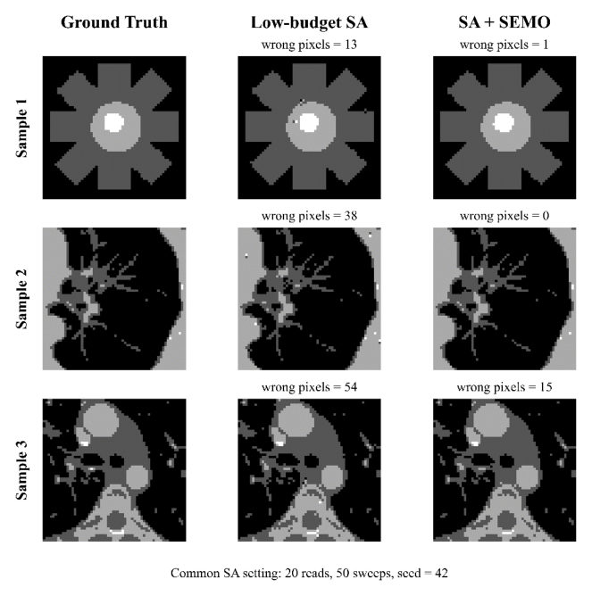
<figcaption class="paper-figure-caption"><b>Fig 1.</b> Figure 1. Comparison of ground-truth images, low-budget simulated annealing (SA) reconstructions, and SEMO- mitigated reconstructions for three 54-view ROI-QCSTR instances. The initial SA setting was fixed at 20 reads, 50 sweeps, and random seed 42 for all three instances. The number of incorrectly reconstructed pixels is indicated for each reconstructed image.</figcaption>
</figure>
<figure class="paper-figure-card">
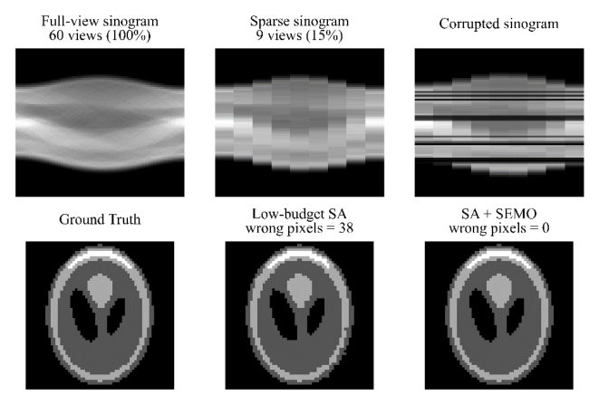
<figcaption class="paper-figure-caption"><b>Fig 2.</b> Figure 2. SEMO error mitigation in the ring-artifact reconstruction experiment with 15% projection sampling and 20% detector-row corruption. The upper row shows the full-view sinogram with 60 views, the sparse sinogram generated from nine uniformly spaced projection angles (15% of the 60-view reference angular count), and the corresponding corrupted sinogram. The lower row shows the ground-truth image, the low-budget SA reconstruction, and the SEMO-mitigated reconstruction. The number of incorrectly reconstructed pixels decreased from 38 to zero after SEMO processing.</figcaption>
</figure>
<figure class="paper-figure-card">
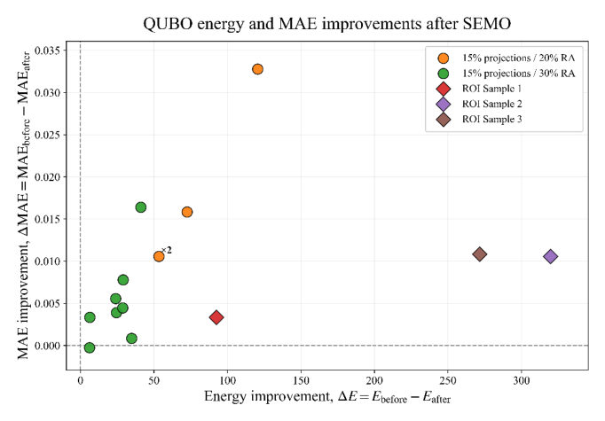
<figcaption class="paper-figure-caption"><b>Fig 3.</b> Figure 3. QUBO energy and MAE improvements after SEMO processing for the main ROI-QCSTR and ring- artifact experiments. The horizontal axis represents the reduction in QUBO energy, ∆𝑬= 𝑬𝐛𝐞𝐟𝐨𝐫𝐞−𝑬𝐚𝐟𝐭𝐞𝐫, and the vertical axis represents the reduction in mean absolute error, ∆𝑴𝑨𝑬= 𝑴𝑨𝑬𝐛𝐞𝐟𝐨𝐫𝐞−𝑴𝑨𝑬𝐚𝐟𝐭𝐞𝐫 . Positive values on both axes indicate simultaneous improvement in the QUBO objective and image-domain reconstruction accuracy. The symbol × 𝟐 indicates two evaluated runs with identical (∆𝑬,∆𝑴𝑨𝑬) coordinates.</figcaption>
</figure>
</div>
<p><strong>Summary.</strong> This paper investigates using quantum-inspired optimization methods, specifically Simulated Annealing followed by Spin-Error Mitigation (SEMO), to reconstruct CT images. It tackles the scaling challenge of formulating CT as a QUBO problem. The key finding is that SEMO significantly boosts the accuracy of low-budget quantum solver outputs, establishing a strong benchmark for future large-scale quantum medical imaging applications.</p>
<p><strong>Why it may be interesting.</strong> The work directly applies quantum optimization techniques (QUBO, SA, SEMO) to a complex inverse problem in medical imaging, providing a concrete, near-term application case for quantum computation.</p>
<details>
<summary>Detailed structure</summary>
<p><strong>Main problem.</strong> The paper addresses the challenge of scaling quantum-optimization-based Computed Tomography (CT) reconstruction to larger images by improving current low-budget quantum solver outputs.</p>
<p><strong>Main result.</strong> Applying Spin-Error Mitigation for Optimisation (SEMO) significantly improved the reconstruction accuracy of low-budget Simulated Annealing (SA) outputs, achieving results comparable to or better than unmitigated hybrid quantum-classical solvers.</p>
<p><strong>Method.</strong> The authors use a quantum-inspired approach, formulating CT reconstruction as a QUBO problem, and apply SA followed by SEMO error mitigation to solve it.</p>
<p><strong>Model / system.</strong> The physical system is CT image reconstruction, modeled mathematically as a Quadratic Unconstrained Binary Optimization (QUBO) problem derived from sinogram consistency and spatial regularization terms.</p>
<p><strong>Key observables.</strong> Reconstruction accuracy, number of incorrectly reconstructed pixels, and QUBO energy.</p>
<p><strong>Important parameters / regimes.</strong> The problem size is benchmarked at a $60 	imes 60$ ROI, which translates to 10,800 binary variables; scaling to larger images is the long-term goal.</p>
<p><strong>Assumptions / limitations.</strong> The study assumes that SA-SEMO can provide a reliable initial solution-quality benchmark, although it does not guarantee reaching the true global QUBO optimum.</p>
<p><strong>Figures summary.</strong> Not specified in the notes, but the paper compares SA-SEMO results against hybrid-solver outputs for various ROI and corrupted-sinogram test cases.</p>
<p><strong>Paper structure.</strong> The paper first establishes the QUBO formulation for CT reconstruction, then details the use of SA and SEMO for solving this problem, and finally presents comparative results across various test instances (ROI and corrupted sinograms) to benchmark the mitigation technique.</p>
</details>
<details>
<summary>Abstract</summary>
<p>Quantum-optimization-based computed tomography (CT) reconstruction has demonstrated quantum supremacy in reconstruction accuracy over conventional classical methods under sparse-view and corrupted-sinogram conditions. However, scaling this approach remains challenging because larger images require increasingly many binary variables and interactions in the underlying quadratic unconstrained binary optimization (QUBO) model. Even with iterative region-of-interest (ROI) refinement, a 60 by 60 ROI with three X-ray mass attenuation coefficients requires 10,800 binary variables under our encoding. As an initial step toward larger quantum CT images, we investigate simulated annealing (SA) followed by spin-error mitigation for optimisation (SEMO), without altering the CT-QUBO objective. We evaluate three 54-view ROI reconstruction instances and nine-view reconstruction with detector-row corruption, comparing SA and SEMO with selected hybrid quantum-classical solver results. For the ROI cases, SEMO reduced the numbers of incorrectly reconstructed pixels in low-budget SA outputs from 13 to 1, 38 to 0, and 54 to 15. With 20 percent detector-row corruption, three of four selected SA and SEMO pairs achieved exact reconstruction. Applying SEMO to one hybrid-solver output reduced its ROI error from 78 to 1 pixel. Improvements were instance-dependent: in one corrupted-sinogram case, QUBO energy decreased while image-domain error increased slightly; in one ROI case, the refined image retained 15 incorrect pixels despite having lower QUBO energy than ground truth. At the evaluated problem sizes, SA and SEMO attained reconstruction accuracy comparable to or better than selected unmitigated hybrid-solver results, providing an initial solution-quality benchmark for future larger-scale, parallelized quantum CT image reconstruction.</p>
</details>
<p><sub><a href="#top">↑ back to top</a></sub></p>

<p><a id="paper-2610.34996"></a></p>
<h3 id="rigid-band-shift-in-electron-doped-kagome-metal"><a href="http://arxiv.org/abs/2610.34996v1">Rigid Band Shift in Electron-Doped Kagome Metal</a></h3>
<p><strong>Authors:</strong> M. Pinterić, E. Uykur, S. Salters, G. Pokharel, S. D. Wilson, M. Dressel, M. Wenzel<br>
<strong>Type:</strong> both · <strong>Category:</strong> strongly correlated electrons · <strong>PDF:</strong> <a href="https://arxiv.org/pdf/2610.34996v1">https://arxiv.org/pdf/2610.34996v1</a><br>
<strong>Analysis basis:</strong> full PDF text, analyzed in chunks</p>
<div class="figure-strip-hint">↔ Scroll figures horizontally</div>
<div class="paper-figures-scroll">
<figure class="paper-figure-card">
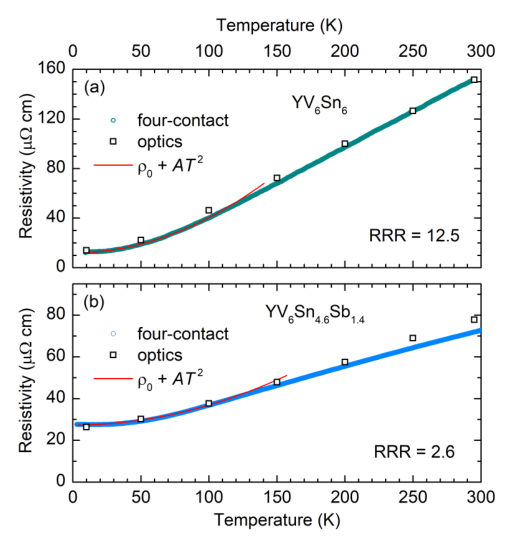
<figcaption class="paper-figure-caption"><b>Fig 1.</b> FIG. 1. Four-probe dc resistivity of YV6Sn6 (a) and YV6Sn4.6Sb1.4 (b) measured on the samples used in the opti- cal experiments. Black squares represent the resistivity values obtained from the Hagen-Rubens fits to the low-energy reflec- tivities.</figcaption>
</figure>
<figure class="paper-figure-card">
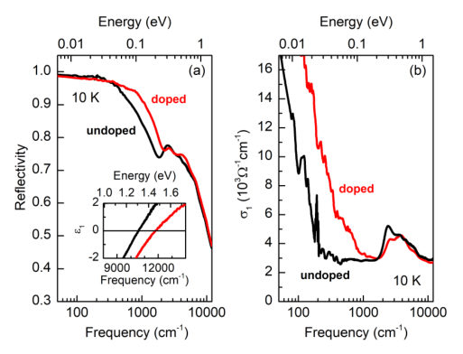
<figcaption class="paper-figure-caption"><b>Fig 2.</b> FIG. 3. Comparison of the optical spectra of pristine YV6Sn6 and YV6Sn4.6Sb1.4 at T = 10 K. The measured reflectivity is plotted in panel (a). The inset shows the zero crossing of the real part of the dielectric permittivity, marking the screened plasma frequency ωscreened p = ωp/√ε∞. Panel (b) presents the calculated real part of the optical conductivity.</figcaption>
</figure>
<figure class="paper-figure-card">
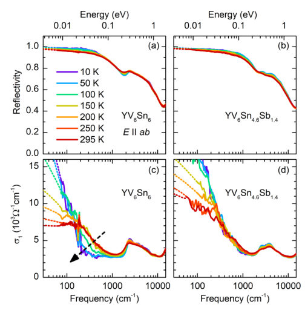
<figcaption class="paper-figure-caption"><b>Fig 3.</b> FIG. 2. (a)(b) Temperature-dependent reflectivity of YV6Sn6 and YV6Sn4.6Sb1.4, respectively, measured in the ab plane. (c)(d) Corresponding real parts of the optical conductivity. The low-energy values obtained by the Hagen-Rubens extrap- olation are plotted with dotted lines.</figcaption>
</figure>
<figure class="paper-figure-card">
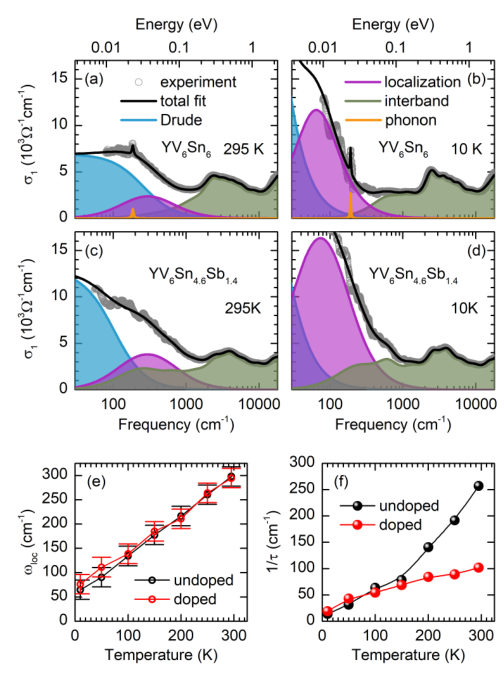
<figcaption class="paper-figure-caption"><b>Fig 4.</b> FIG. 4. Exemplary decompositions of the optical conduc- tivity of YV6Sn6 at room temperature (a) and 10 K (b). (c)(d) Same but for the doped sample. The spectra are mod- eled by a Drude peak (blue), a localization peak (purple), and multiple Lorentzians describing the interband transitions (dark green). In pristine YV6Sn6, an additional phonon mode is resolved (orange). (e) Temperature evolution of the posi- tion of the localization peak. Error bars of 20 cm−1 are as- sumed. (f) Drude scattering rates obtained from the fits.</figcaption>
</figure>
<figure class="paper-figure-card">
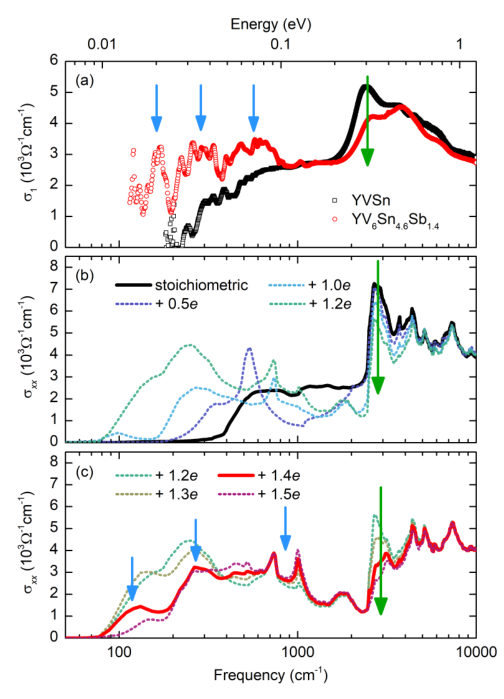
<figcaption class="paper-figure-caption"><b>Fig 5.</b> FIG. 5. Interband contribution to the optical conductiv- ity. (a) Experimental interband optical conductivity obtained by subtracting the modeled intraband contributions (Drude + localization peaks) and the phonon mode from the data. Characteristic modifications observed in the doped sample are highlighted by blue and green arrows. (b)(c) DFT-derived in- terband absorption for the stoichiometric case as well as for electron-doped calculations. The experimentally observed in- terband transitions in the doped case are well reproduced by adding 1.4 electrons per formula unit [red curve in panel (c)].</figcaption>
</figure>
</div>
<p><strong>Summary.</strong> This work examines how substituting Sn with Sb in the kagome metal YV6Sn6 tunes its electronic properties by shifting the Fermi level. Using a combination of infrared spectroscopy and DFT, the authors demonstrate that this doping preserves the band dispersion while allowing access to different electronic regimes. This provides a powerful route to study band-filling effects in correlated materials.</p>
<p><strong>Why it may be interesting.</strong> The ability to tune the Fermi level systematically via chemical doping in a correlated material like a kagome metal provides a clean experimental handle to map out the electronic structure dependence on filling, which is crucial for understanding correlated electron physics.</p>
<details>
<summary>Detailed structure</summary>
<p><strong>Main problem.</strong> The study investigates how Sn-site doping with Sb affects the electronic structure and optical properties of the nonmagnetic kagome metal YV6Sn6.</p>
<p><strong>Main result.</strong> Sb substitution acts as a rigid shift of the Fermi level, allowing systematic tuning of band-filling-dependent electronic properties while preserving the underlying band dispersion.</p>
<p><strong>Method.</strong> The research combines experimental measurements (infrared spectroscopy, DC resistivity) with theoretical calculations using Density-Functional Theory (DFT) and the Drude-Lorentz model.</p>
<p><strong>Model / system.</strong> The physical system is the kagome metal YV6Sn6, which is doped by substituting Sn with Sb (YV6Sn(6-x)Sb_x). The analysis focuses on the electronic response to changes in electron count.</p>
<p><strong>Key observables.</strong> Temperature-dependent resistivity, optical conductivity ($\sigma(\omega, T)$), plasma edge ($\omega_{	ext{screened}}^p$), and interband optical transitions.</p>
<p><strong>Important parameters / regimes.</strong> Doping concentration ($x$), temperature ($T$), and the Fermi level position relative to specific band features (e.g., Van Hove singularities).</p>
<p><strong>Assumptions / limitations.</strong> The doping effect is modeled primarily as a rigid shift of the Fermi level, suggesting the underlying band structure remains largely intact.</p>
<p><strong>Figures summary.</strong> Figures compare temperature-dependent resistivity and optical spectra between pristine and doped samples, showing shifts in plasma edges and changes in spectral weight across different energy ranges.</p>
<p><strong>Paper structure.</strong> The paper progresses by first characterizing the doping effect via transport and optical measurements, then using DFT to model the band structure evolution, and finally mapping the changes in interband transitions as the Fermi level is systematically shifted by doping.</p>
</details>
<details>
<summary>Abstract</summary>
<p>We study the effects of Sn-site doping on the electronic structure of nonmagnetic kagome metal YV$_6$Sn$_{6-x}$Sb$_x$ by infrared spectroscopy and density-functional theory. The results for samples with $x$ = 0 and 1.4 demonstrate that partial substitution of Sn by Sb acts as a rigid shift of the Fermi level while leaving the band dispersion largely intact. Our findings establish Sn-site substitution in YV$_6$Sn$_6$ as a route to systematically investigate band-filling-dependent electronic properties of nonmagnetic kagome metals.</p>
</details>
<p><sub><a href="#top">↑ back to top</a></sub></p>

<p><a id="paper-2610.34480"></a></p>
<h3 id="rigorous-lower-bounds-for-atomic-and-ionic-ground-state-energies"><a href="http://arxiv.org/abs/2610.34480v1">Rigorous Lower Bounds for Atomic and Ionic Ground-State Energies</a></h3>
<p><strong>Authors:</strong> Michael Hofacker<br>
<strong>Type:</strong> theory · <strong>Category:</strong> other · <strong>PDF:</strong> <a href="https://arxiv.org/pdf/2610.34480v1">https://arxiv.org/pdf/2610.34480v1</a><br>
<strong>Analysis basis:</strong> full PDF text, analyzed in chunks</p>
<div class="figure-strip-hint">↔ Scroll figures horizontally</div>
<div class="paper-figures-scroll">
<figure class="paper-figure-card">
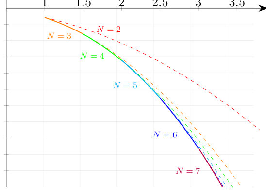
<figcaption class="paper-figure-caption"><b>Fig 1.</b> Figure 1: The lower bound EL(N, Z) for the initial values from Eq. (26) and the function f from Eq. (14) (i.e. f(Z) = 2Z + 1 for Z ≤5.5). The dashed curves of different colors correspond to different values of N, but they all have the same starting point EL(N, Z = 1) = E0 = −0.5774. The union of the solid lines corresponds to the function Z 7→EL(⌊f(Z)⌋, Z), where the floor function ⌊·⌋is defined by ⌊x⌋:= max {n ∈Z : n ≤x} for x ∈R. From the definition of EL in Theorem 2.1, it follows that EL(⌊f(Z)⌋, Z) = EL(7, Z) for Z ≤3.5.</figcaption>
</figure>
<figure class="paper-figure-card">
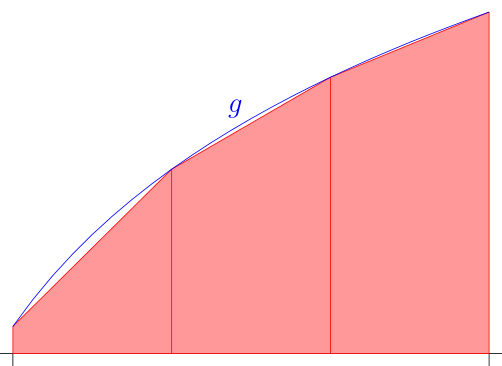
<figcaption class="paper-figure-caption"><b>Fig 2.</b> Figure 2: The red area is obtained by applying the composite trapezoidal rule with step width</figcaption>
</figure>
</div>
<p><strong>Summary.</strong> This paper develops a novel, rigorous mathematical technique to compute lower bounds for the ground-state energies of atoms and ions. By establishing an improved explicit lower bound, it significantly advances the theoretical understanding of how electronic energy scales with nuclear charge and electron count. The methodology is purely analytical, providing deep mathematical tools for quantum many-body theory.</p>
<p><strong>Why it may be interesting.</strong> This work provides deep mathematical insights into the fundamental energy scaling laws of quantum many-body systems, which underpins the theoretical understanding of atomic structure relevant to AMO physics.</p>
<details>
<summary>Detailed structure</summary>
<p><strong>Main problem.</strong> The primary goal is establishing rigorous, mathematically derived lower bounds for the ground-state energies of atoms and ions, $E(N, Z)$. This is mathematically challenging because deriving lower bounds is significantly harder than finding upper bounds.</p>
<p><strong>Main result.</strong> The authors establish a new iterative method yielding the explicit lower bound $E(N, Z) \geq -0.8710 N^{1/3}Z^2$, significantly improving previous estimates and approaching the Thomas-Fermi asymptotic limit.</p>
<p><strong>Method.</strong> The work employs a recursive, analytical method (Theorem 2.1) based on established mathematical inequalities and properties of the electronic Hamiltonian, avoiding purely numerical techniques.</p>
<p><strong>Model / system.</strong> The system is the electronic Hamiltonian for atoms/ions with $N$ electrons and nuclear charge $Z$, described by $H_N(Z)$. The analysis focuses on the ground-state energy $E(N, Z) = \inf \sigma(H_N(Z))$ and the maximum number of bound electrons, $N_c(Z)$.</p>
<p><strong>Key observables.</strong> Ground-state energy $E(N, Z)$, the constant $A$ in the energy estimate, and the ionization capacity $N_c(Z)$.</p>
<p><strong>Important parameters / regimes.</strong> Nuclear charge $Z$, number of electrons $N$, and the asymptotic limit $N 	o \infty$.</p>
<p><strong>Assumptions / limitations.</strong> The method relies on the existence of a strictly monotonically increasing function $f(Z)$ that bounds $N_c(Z)$, and the analysis compares results against known Thomas-Fermi asymptotics.</p>
<p><strong>Paper structure.</strong> The paper introduces the problem, develops a recursive method (Theorem 2.1) for lower bounds, derives explicit bounds (Theorem 2.2), analyzes monotonicity properties (Theorem 2.4), and concludes with uniqueness results for expectation values.</p>
</details>
<details>
<summary>Abstract</summary>
<p>We establish a new iterative method for computing rigorous lower bounds for the ground-state energies of all atoms and ions. The accuracy of the resulting bounds depends on two ingredients: the quality of the initial energy estimate and the quality of the used upper bound for the maximum number of bound electrons, $N_c(Z)$, as a function of the nuclear charge $Z>0$. In particular, this new method allows us to establish the explicit lower bound $E(N,Z) \geq -0.8710\,N^{1/3}Z^2$ for the ground-state energy $E(N,Z)$ of the atom/ion with $N \in \mathbb{N}$ electrons and nuclear charge $Z \in (0,N]$, thereby considerably improving the best known constant $A=(3/2)^{1/3} \approx 1.1447$ in the estimate $E(N,Z) \geq -A\,N^{1/3}Z^2$ for $0 < Z \leq N$ and coming much closer to the best possible constant given by the Thomas-Fermi asymptotics $\lim_{N \to \infty} |E(N,N)|N^{-7/3}= -E_{\text{TF}}(1)\approx 0.7687$ derived in Adv. Math., 23(1) by Lieb and Simon. To demonstrate the potential and the limits of our method, we also compute explicit lower bounds for the ground-state energies $E(N,N)$ of all atoms with $2 \leq N \leq 86$ and we compare them with the bounds obtained in J. Chem. Phys., 62(8) by Hertel, Lieb, Thirring and the bounds obtained by Seco in his dissertation. Finally, we also provide a uniqueness result for the expectation values of the kinetic, potential and interaction energies on the ground-state space.</p>
</details>
<p><sub><a href="#top">↑ back to top</a></sub></p>

<p><a id="paper-2610.35099"></a></p>
<h3 id="self-correcting-3d-surface-code-with-growing-local-dimension"><a href="http://arxiv.org/abs/2610.35099v1">Self-Correcting 3D Surface Code with Growing Local Dimension</a></h3>
<p><strong>Authors:</strong> Jinkang Guo<br>
<strong>Type:</strong> theory · <strong>Category:</strong> quantum information and computing · <strong>PDF:</strong> <a href="https://arxiv.org/pdf/2610.35099v1">https://arxiv.org/pdf/2610.35099v1</a><br>
<strong>Analysis basis:</strong> full PDF text, analyzed in chunks</p>
<div class="figure-strip-hint">↔ Scroll figures horizontally</div>
<div class="paper-figures-scroll">
<figure class="paper-figure-card">
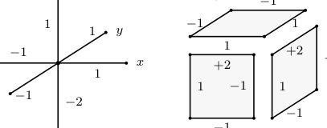
<figcaption class="paper-figure-caption"><b>Fig 1.</b> Figure 1. Bulk stabilizers of the weighted 3D surface code. The vertex-centered X stabilizer has coefficients (+x, −x, +y, −y, +z, −z) = (1, −1, 1, −1, 1, −2). For Z sta- bilizers, the xy plaquette has the oriented edge pattern (1, 1, −1, −1). For each vertical xz or yz plaquette, the bot- tom, right, top and left edges carry (−1, −1, +2, 1), respec- tively. All panels use the same coordinate projection.</figcaption>
</figure>
<figure class="paper-figure-card">
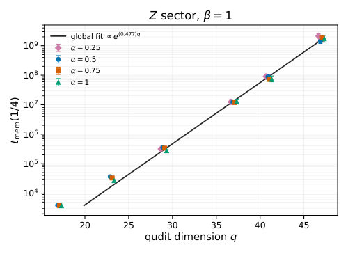
<figcaption class="paper-figure-caption"><b>Fig 2.</b> Figure 3. Z-sector memory time at β = 1 for q ≃aαLα, with α = 0.25, 0.5, 0.75, 1 and a0.25 = 14, a0.5 = 6, a0.75 = 3, and a1 = 2, plotted as a function of the qudit dimension q. Despite the different values of α and aα, the data collapse onto a common curve, with a global fit tmem(1/4) ∝e0.477q, suggesting that the memory time is controlled by q in this regime.</figcaption>
</figure>
<figure class="paper-figure-card">
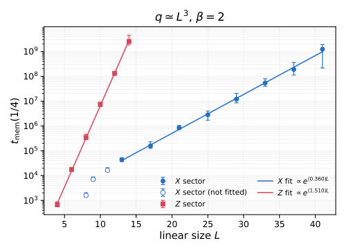
<figcaption class="paper-figure-caption"><b>Fig 3.</b> Figure 2. Memory times of the X- and Z-error sectors at β = 2 with q ≃L3. Both sectors exhibit exponential growth with the linear system size L. The solid lines show fits tX mem(1/4) ∝e0.360L and tZ mem(1/4) ∝e1.510L; the open X- sector data points at small L are not included in the fit.</figcaption>
</figure>
</div>
<p><strong>Summary.</strong> This paper introduces a novel self-correcting 3D surface code whose local dimension $q$ is allowed to grow with the system size $N$. By analyzing the thermal dynamics using local Metropolis updates, the authors prove that this growing dimension allows the memory time to scale exponentially with $N^{1/3}$. This establishes growing local dimension as a powerful new resource for designing robust quantum memories.</p>
<p><strong>Why it may be interesting.</strong> This work is highly relevant as it pushes the boundaries of fault-tolerant quantum computation by showing how increasing the local Hilbert space dimension ($q$) can serve as a novel resource to enhance passive error correction capabilities in physical hardware.</p>
<details>
<summary>Detailed structure</summary>
<p><strong>Main problem.</strong> The paper addresses the challenge of designing self-correcting quantum memories that can passively preserve quantum information in 3D systems without continuous active error correction.</p>
<p><strong>Main result.</strong> It proves that by constructing a 3D surface code over a local dimension $q$ that grows with system size ($q=\Theta(N)$), the memory times in both error sectors scale exponentially, specifically as $\exp(\Omega(N^{1/3}))$.</p>
<p><strong>Method.</strong> The analysis combines theoretical bounds (e.g., Peierls estimates, chain complex methods) with local Metropolis dynamics simulations to characterize the thermal stability.</p>
<p><strong>Model / system.</strong> The system is a self-correcting 3D surface code defined over $\mathbb{Z}_q$. The code is based on the standard 3D surface code but modifies the Pauli operators, and dynamics are governed by local $X^{\pm 1}$ and $Z^{\pm 1}$ updates.</p>
<p><strong>Key observables.</strong> Memory time ($t_{	ext{mem}}$), which is the time required for the failure probability to reach $1/4$ in both X and Z error sectors.</p>
<p><strong>Important parameters / regimes.</strong> Local dimension $q$ (scaling as $\Theta(N)$), System Size $N$ (or linear dimension $L$), and the inverse temperature $eta$ (must be below a critical temperature $eta_c$).</p>
<p><strong>Assumptions / limitations.</strong> The analysis assumes $q$ is odd and $q \ge cL^3$. The rigorous bounds rely on the existence of a local recovery mechanism for small syndrome clusters.</p>
<p><strong>Figures summary.</strong> Figure 1 illustrates the bulk stabilizers of the weighted 3D surface code. Figures 2 and 3 show numerical results confirming the exponential growth of memory times for both X and Z sectors as $q$ and $L$ increase.</p>
<p><strong>Paper structure.</strong> The paper proceeds by constructing the weighted code over $\mathbb{Z}_q$, analyzing the dynamics using the Lee metric, and then deriving lower bounds on the memory times for both X and Z sectors using techniques like Peierls estimates and chain complex analysis.</p>
</details>
<details>
<summary>Abstract</summary>
<p>We construct self-correcting 3D surface codes over $\mathbb Z_q$ with local dimension $q$ growing with system size. The model preserves the local geometry and stabilizer support of the ordinary 3D surface code and remains translation invariant in the bulk, while modifying only the stabilizer Pauli powers. We use the Lee metric to characterize error weight and consider local Metropolis dynamics with single-qudit $X^{\pm1}$ and $Z^{\pm1}$ updates, each changing the energy by at most a constant independent of $q$ and system size $N$. We prove that, below the critical temperature, when the local dimension scales as $q=Θ(N)$, the memory times in both error sectors grow at least as $\exp\left[Ω(N^{1/3})\right]$. Our numerical results further support these analytical results. Together, these results establish growing local Hilbert-space dimension as a new resource for designing self-correcting quantum memories while retaining simple local geometry and local thermal dynamics.</p>
</details>
<p><sub><a href="#top">↑ back to top</a></sub></p>

<p><a id="paper-2610.35797"></a></p>
<h3 id="the-math1510math-smoothed-entanglement-of-formation-and-its-relation-to-the-moreau-yosida-approximation"><a href="http://arxiv.org/abs/2610.35797v1">The $\varepsilon$-smoothed Entanglement of Formation and its relation to the Moreau-Yosida approximation</a></h3>
<p><strong>Authors:</strong> M. E. Shirokov<br>
<strong>Type:</strong> theory · <strong>Category:</strong> quantum information and computing · <strong>PDF:</strong> <a href="https://arxiv.org/pdf/2610.35797v1">https://arxiv.org/pdf/2610.35797v1</a><br>
<strong>Analysis basis:</strong> full PDF text, analyzed in chunks</p>
<div class="figure-strip-hint">↔ Scroll figures horizontally</div>
<div class="paper-figures-scroll">
<figure class="paper-figure-card">
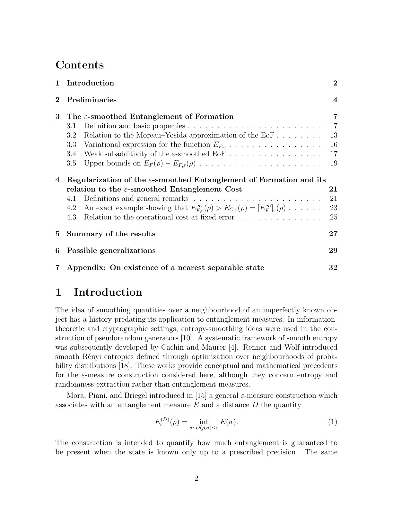
<figcaption class="paper-figure-caption"><b>Fig 1.</b> Low-resolution page preview, page 2</figcaption>
</figure>
<figure class="paper-figure-card">
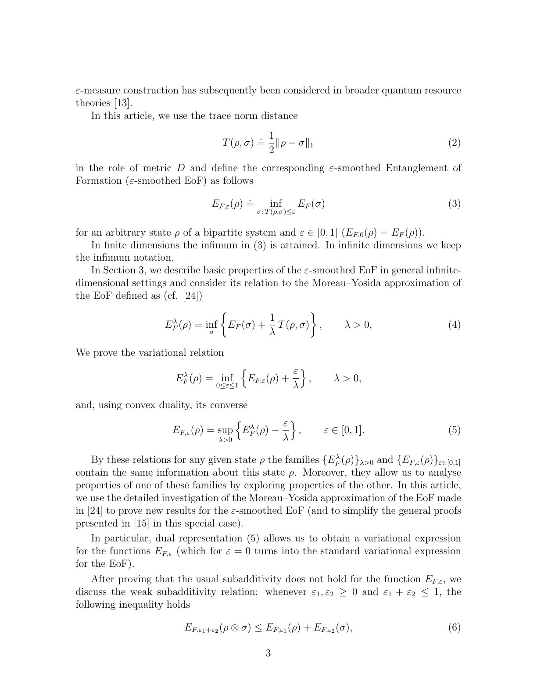
<figcaption class="paper-figure-caption"><b>Fig 2.</b> Low-resolution page preview, page 3</figcaption>
</figure>
<figure class="paper-figure-card">
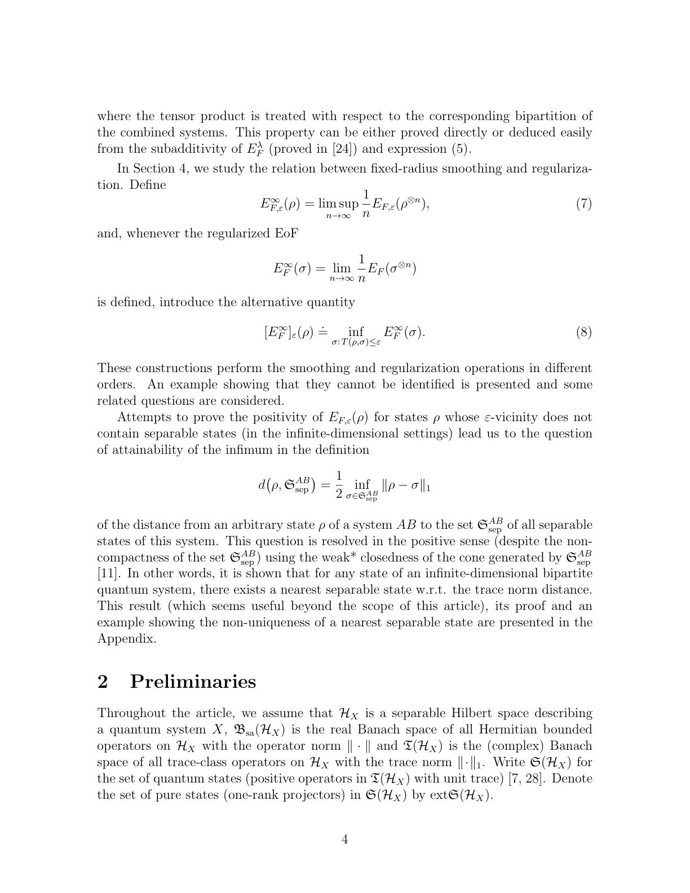
<figcaption class="paper-figure-caption"><b>Fig 3.</b> Low-resolution page preview, page 4</figcaption>
</figure>
<figure class="paper-figure-card">
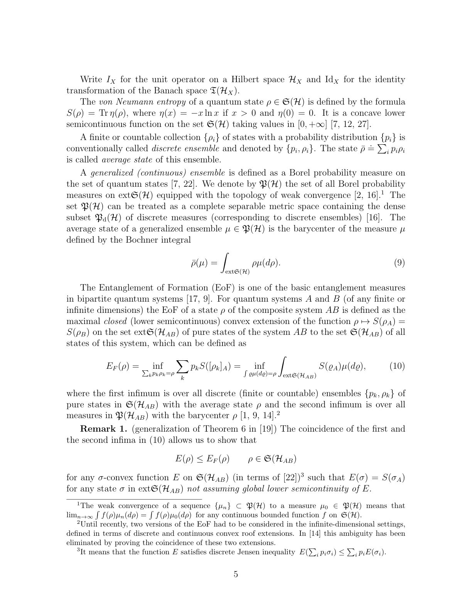
<figcaption class="paper-figure-caption"><b>Fig 4.</b> Low-resolution page preview, page 5</figcaption>
</figure>
<figure class="paper-figure-card">
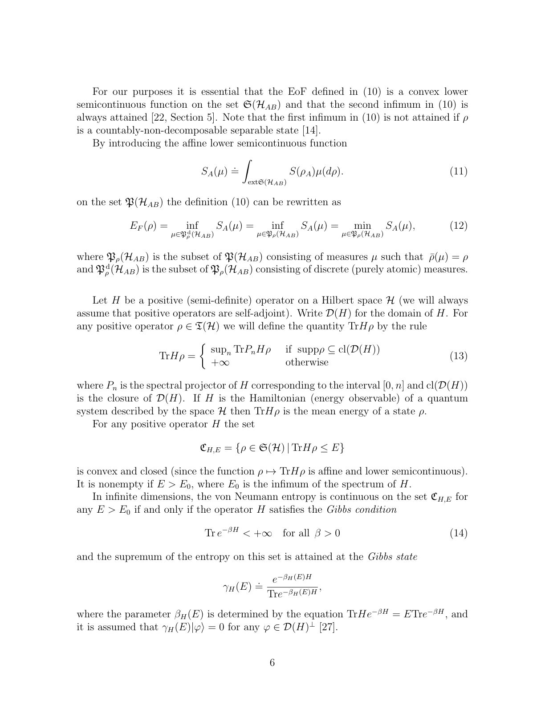
<figcaption class="paper-figure-caption"><b>Fig 5.</b> Low-resolution page preview, page 6</figcaption>
</figure>
</div>
<p><strong>Summary.</strong> This paper develops a mathematical framework to study the Entanglement of Formation ($ ext{EoF}$) by introducing an $\varepsilon$-smoothed version, $   ext{EF}_{\varepsilon}$. It rigorously connects this smoothed measure to the Moreau-Yosida approximation, proving convergence properties and establishing variational formulas. This work provides powerful tools for analyzing entanglement in both finite and infinite-dimensional quantum systems.</p>
<p><strong>Why it may be interesting.</strong> The rigorous mathematical treatment of entanglement measures using regularization and approximation techniques is fundamental for quantifying quantum correlations in complex systems, bridging abstract functional analysis with physical observables.</p>
<details>
<summary>Detailed structure</summary>
<p><strong>Main problem.</strong> The paper analyzes the $\varepsilon$-smoothed version of the Entanglement of Formation ($  ext{EoF}$) and establishes its rigorous mathematical relationship to the Moreau-Yosida approximation of the $   ext{EoF}$.</p>
<p><strong>Main result.</strong> It proves that the $\varepsilon$-smoothed function $    ext{EF}_{\varepsilon}(
ho)$ is non-increasing in $\varepsilon$ and converges pointwise to the true $    ext{EoF}$ as $\varepsilon 	o 0^+$, while also deriving a variational expression for it.</p>
<p><strong>Method.</strong> The analysis employs convex analysis, relating the $\varepsilon$-smoothing via the Mora-Piani-Briegel construction to the Moreau-Yosida approximation using the trace norm distance as the metric.</p>
<p><strong>Model / system.</strong> The study concerns bipartite quantum systems (AB) described by density matrices $
ho$, applicable to both finite and infinite-dimensional subsystems.</p>
<p><strong>Key observables.</strong> Entanglement of Formation ($   ext{EoF}$), $\varepsilon$-smoothed $ ext{EoF}$ ($    ext{EF}<em ext_AB="ext{AB">{\varepsilon}$), and the trace-norm distance to separable states ($d(
ho, \mathcal{S}</em>)$).}}^{  ext{sep}</p>
<p><strong>Important parameters / regimes.</strong> The smoothing parameter $\varepsilon \in (0, 1]$ and the approximation parameter $\lambda > 0$.</p>
<p><strong>Assumptions / limitations.</strong> The analysis relies on the properties of convex, lower semi-continuous functions and the existence of nearest separable states in the trace norm for infinite dimensions.</p>
<p><strong>Paper structure.</strong> The paper introduces the $\varepsilon$-smoothed $   ext{EoF}$ and relates it to the Moreau-Yosida approximation. It then derives variational expressions and proves properties like weak subadditivity and convergence rates as $\varepsilon 	o 0^+$. Finally, it discusses applicability to other entanglement measures.</p>
</details>
<details>
<summary>Abstract</summary>
<p>We describe a family of convex continuous functions $E_{F,\varepsilon}$, $\varepsilon\in(0,1]$, on the set of states of a bipartite quantum system (consisting of finite-dimensional or infinite-dimensional subsystems) obtained by applying the Mora-Piani-Briegel construction of $\varepsilon$-measure (proposed in [Phys. Rev. A 109, 052413]) to the Entanglement of Formation (EoF) with the use of the trace norm distance in the role of basic metric. These functions are non-increasing in $\varepsilon$ and converge pointwise to the EoF as $\varepsilon\to0^+$. We conducted a detailed analysis of properties of the functions $E_{F,\varepsilon}$, using (among others) the relationship between the family $\{E_{F,\varepsilon}\}_{\varepsilon\in[0,1]}$ and the family $\{E^λ_F(ρ)\}_{λ>0}$ of Moreau-Yosida approximations of the EoF explored in [arXiv:2609.30246].   We obtain a variational expression for the functions $E_{F,\varepsilon}$ (which for $\varepsilon=0$ turns into the standard variational expression for the EoF). We also describe the weak subadditivity property of the functions $E_{F,\varepsilon}$ and analyse their continuity properties.   The semicontinuity bounds for the EoF (presented in [Lob.J.Math., 46, 2632-2658],[arXiv:2404.07978]) allow us to obtain easily computable upper bounds on the rate of uniform convergence of the function $E_{F,\varepsilon}$ to the EoF as $\varepsilon\to0^+$ on the sets of states with bounded rank/energy of one of the marginal states.   Applicability of the obtained results to other entanglement measures, in particular, to the relative entropy of entanglement, is discussed.   As an auxiliary result, it is shown that for any state of an infinite-dimensional bipartite quantum system, there exists a nearest separable state w.r.t. the trace norm distance. The non-uniqueness of such a state is also shown.</p>
</details>
<p><sub><a href="#top">↑ back to top</a></sub></p>

<p><a id="paper-2610.35814"></a></p>
<h3 id="the-fate-of-math1536math-superconductivity-in-the-bilayer-nickelate-lamath1537mathnimath1538mathomath1539math"><a href="http://arxiv.org/abs/2610.35814v1">The fate of $s_{\pm}$ superconductivity in the bilayer nickelate La$_3$Ni$_2$O$_7$</a></h3>
<p><strong>Authors:</strong> Kaustubh Roy, Piers Coleman<br>
<strong>Type:</strong> theory · <strong>Category:</strong> strongly correlated electrons · <strong>PDF:</strong> <a href="https://arxiv.org/pdf/2610.35814v1">https://arxiv.org/pdf/2610.35814v1</a><br>
<strong>Analysis basis:</strong> full PDF text, analyzed in chunks</p>
<div class="figure-strip-hint">↔ Scroll figures horizontally</div>
<div class="paper-figures-scroll">
<figure class="paper-figure-card">
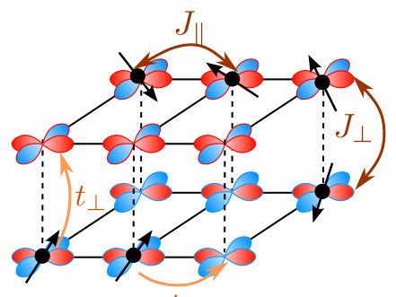
<figcaption class="paper-figure-caption"><b>Fig 1.</b> FIG. 1. Bilayer t-J model of the bilayer nickelate La3Ni2O7 adopted for our analysis.</figcaption>
</figure>
<figure class="paper-figure-card">
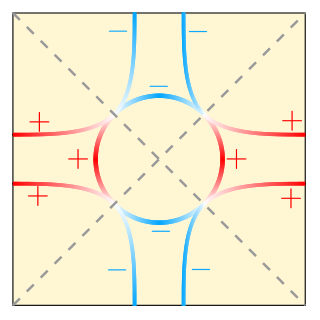
<figcaption class="paper-figure-caption"><b>Fig 2.</b> FIG. 2. d-wave pairing order. The lines nodes running across the Brillouin zone (black dotted lines) break up the regions of changing signs of the pair gap function</figcaption>
</figure>
<figure class="paper-figure-card">
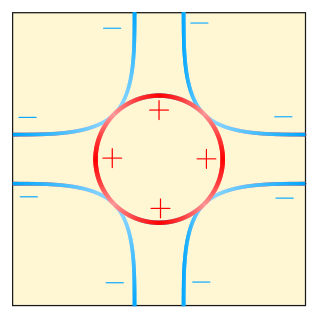
<figcaption class="paper-figure-caption"><b>Fig 3.</b> FIG. 3. s±-wave pairing order. The extended-s pairing is superimposed with an extra pairing gap ∆z that changes sign between Fermi surfaces.</figcaption>
</figure>
<figure class="paper-figure-card">
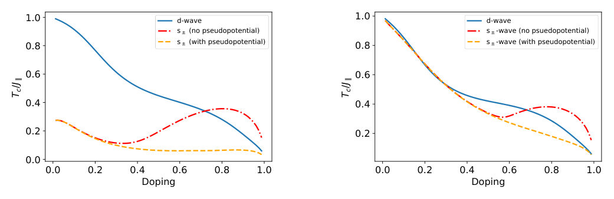
<figcaption class="paper-figure-caption"><b>Fig 4.</b> FIG. 4. The Tc for d-wave vs s± wave for two different regimes of coupling strengths. We choose two representative regimes: small J⊥(= 0.5J∥) (left) and large J⊥(=J∥) (right)</figcaption>
</figure>
<figure class="paper-figure-card">
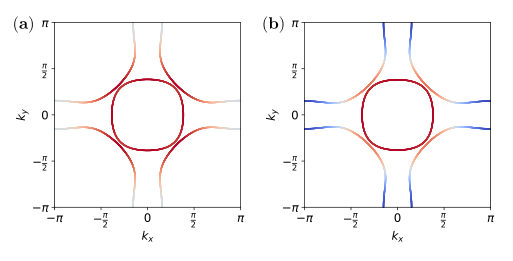
<figcaption class="paper-figure-caption"><b>Fig 5.</b> FIG. 6. Fermi-surface projection of s± gap as T →Tc for J⊥/J∥= 1/2, for intermediate doping. (a): no Coulomb psuedopotential. (b): with Coulomb psuedopotential.</figcaption>
</figure>
</div>
<p><strong>Summary.</strong> This theoretical work investigates the superconducting pairing symmetry in bilayer nickelates using a sophisticated mean-field fractionalization approach on the $t$-$J$ model. By rigorously enforcing the local no-double-occupancy constraint via $   ext{SU}(2)$ symmetry, the authors demonstrate that the resulting physics favors $d$-wave pairing over the $s_{\pm}$ state. This highlights the critical role of local constraints in determining high-temperature superconductivity mechanisms.</p>
<p><strong>Why it may be interesting.</strong> The explicit inclusion of local constraints via $    ext{SU}(2)$ symmetry provides a rigorous theoretical tool to analyze pairing competition in strongly correlated systems, which is relevant for understanding exotic pairing mechanisms beyond standard BCS theory.</p>
<details>
<summary>Detailed structure</summary>
<p><strong>Main problem.</strong> The paper aims to determine the role of interlayer coupling in dictating the superconducting pairing symmetry ($s_{\pm}$ vs. $d$-wave) in the bilayer nickelate $ ext{La}_3   ext{Ni}_2   ext{O}_7$.</p>
<p><strong>Main result.</strong> The authors show that by incorporating a full $    ext{SU}(2)$ symmetry treatment that enforces the local no-double-occupancy constraint, the resulting Coulomb pseudopotential suppresses the $s_{\pm}$ symmetry in favor of $d$-wave pairing.</p>
<p><strong>Method.</strong> The study employs a mean-field fractionalization treatment applied to a simplified bilayer $t$-$J$ model, which captures the full $   ext{SU}(2)$ symmetry.</p>
<p><strong>Model / system.</strong> The physical system is the bilayer nickelate $  ext{La}_3   ext{Ni}_2   ext{O}_7$, modeled using a projected bilayer $t$-$J$ Hamiltonian. The analysis focuses on how local constraints, absent in simpler $  ext{U}(1)$ treatments, affect the pairing state.</p>
<p><strong>Key observables.</strong> Pairing symmetry ($s_{\pm}$ vs. $d$-wave), superconducting gap structure, and the effect of the Coulomb pseudopotential.</p>
<p><strong>Important parameters / regimes.</strong> Interlayer coupling, hopping terms ($t$), and superexchange couplings ($J$).</p>
<p><strong>Assumptions / limitations.</strong> The analysis uses a mean-field approximation on a simplified bilayer $t$-$J$ model, focusing on the effect of the local no-double-occupancy constraint.</p>
<p><strong>Figures summary.</strong> Figures compare $d$-wave and $s_{\pm}$-wave pairing orders and illustrate the competition between pairing channels under different coupling regimes.</p>
<p><strong>Paper structure.</strong> The paper develops a mean-field fractionalization scheme capturing $   ext{SU}(2)$ symmetry, derives a new Coulomb pseudopotential constraint, and then applies this to the bilayer $t$-$J$ model to predict the favored pairing symmetry.</p>
</details>
<details>
<summary>Abstract</summary>
<p>Motivated by the recent measurement of high-temperature superconductivity in the bilayer nickelate system La$_3$Ni$_2$O$_7$ in the bulk as well as thin film samples, we seek to understand the role of the interlayer coupling in this system in dictating the pairing symmetry. Many proposals posit the existence of an $s_\pm$ superconducting phase in close competition with the mroe conventional cuprate-like $d$-wave state in both weak- and strong-coupling theories. However, at least in the latter, the effects of Coulomb repulsion and the double occupancy constraint have been largely neglected. In this manuscript, we propose a mean-field fractionalization treatment that captures the full $SU(2)$ particle-hole symmetry of the t-J model at half-filling, and show how a systematic treatment of this new symmetry leads to an added Coulomb pseudopotential constraint - one that is absent in the usual $U(1)$ treatment. We then apply this new fractionalization scheme to a simplified bilayer t-J model of La$_3$Ni$_2$O$_7$, showing how the Coulomb pseudopotential suppresses the existence of $s_\pm$ symmetry in favor of $d$-wave pairing.</p>
</details>
<p><sub><a href="#top">↑ back to top</a></sub></p>

<p><a id="paper-2610.34492"></a></p>
<h3 id="wave-is-all-you-need-a-quantum-language-model-based-on-fully-connected-quantum-boltzmann-machine"><a href="http://arxiv.org/abs/2610.34492v1">Wave Is All You Need: A Quantum Language Model Based on Fully Connected Quantum Boltzmann Machine</a></h3>
<p><strong>Authors:</strong> Jun Liu<br>
<strong>Type:</strong> both · <strong>Category:</strong> disordered systems and neural networks · <strong>PDF:</strong> <a href="https://arxiv.org/pdf/2610.34492v1">https://arxiv.org/pdf/2610.34492v1</a><br>
<strong>Analysis basis:</strong> full PDF text, analyzed in chunks</p>
<div class="figure-strip-hint">↔ Scroll figures horizontally</div>
<div class="paper-figures-scroll">
<figure class="paper-figure-card">
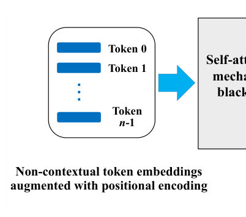
<figcaption class="paper-figure-caption"><b>Fig 1.</b> Figure 1: Self-Attention Mechanism Black Box</figcaption>
</figure>
<figure class="paper-figure-card">
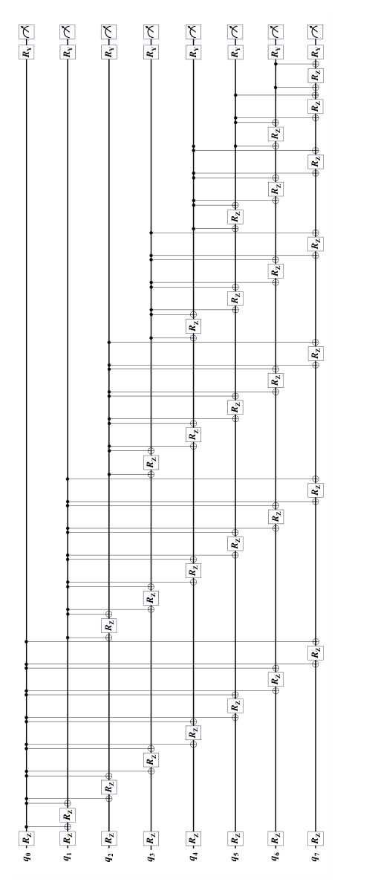
<figcaption class="paper-figure-caption"><b>Fig 2.</b> Figure 2: Quantum Circuit of 8-Qubit Fully Connected Quantum Boltzmann Machine</figcaption>
</figure>
<figure class="paper-figure-card">
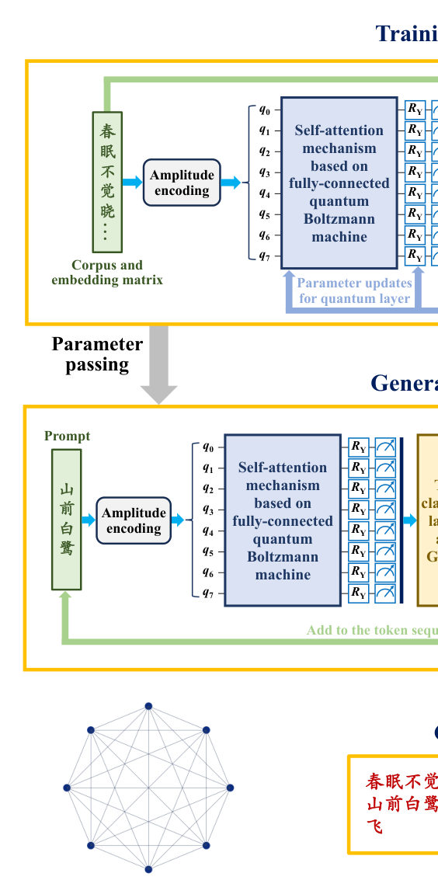
<figcaption class="paper-figure-caption"><b>Fig 3.</b> Figure 3: System Block Diagram of 8-Qubit Fully Connected Quantum Boltzmann</figcaption>
</figure>
<figure class="paper-figure-card">
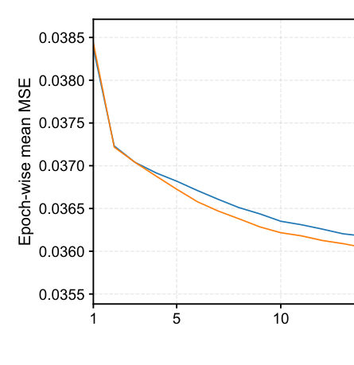
<figcaption class="paper-figure-caption"><b>Fig 4.</b> Figure 4: Computational Results of Model Convergence Experiments</figcaption>
</figure>
<figure class="paper-figure-card">
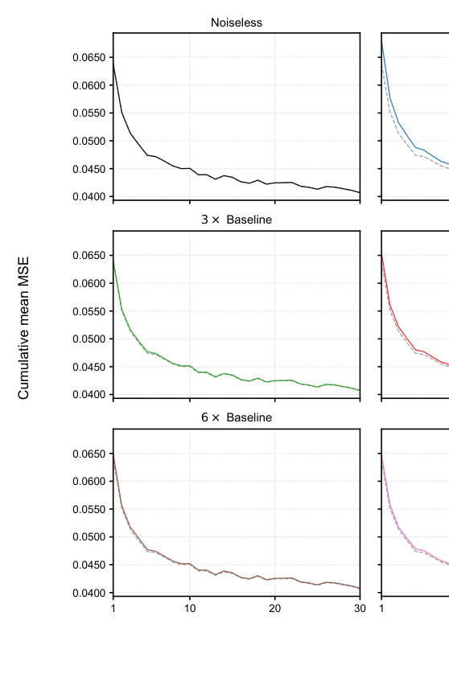
<figcaption class="paper-figure-caption"><b>Fig 5.</b> Figure 5: Computational Results of Noise Robustness Experiments</figcaption>
</figure>
</div>
<p><strong>Summary.</strong> This work introduces an FC-QBM-LM to replace classical self-attention in language models, aiming to preserve continuous semantic information while reducing computational overhead. By implementing attention via unitary quantum evolution, the model achieves strong noise robustness and demonstrates preliminary generative capabilities on poetry. It represents a novel quantum approach to core NLP components.</p>
<p><strong>Why it may be interesting.</strong> It applies quantum machine learning techniques (QBMs) to a complex, high-dimensional data structure (language), offering a quantum perspective on overcoming computational bottlenecks inherent in modern AI architectures.</p>
<details>
<summary>Detailed structure</summary>
<p><strong>Main problem.</strong> The paper addresses the limitations of classical self-attention mechanisms in Language Models (LLMs), specifically the loss of continuous semantic information and high computational complexity.</p>
<p><strong>Main result.</strong> The proposed FC-QBM-LM demonstrates strong noise robustness, retaining over 99% of its noiseless performance, and preliminarily shows capabilities like associative and divergent thinking in poetry generation.</p>
<p><strong>Method.</strong> It proposes using a Fully Connected Quantum Boltzmann Machine (FC-QBM) to implicitly implement self-attention and positional encoding via unitary quantum evolution, mathematically proving its equivalence to classical attention.</p>
<p><strong>Model / system.</strong> The model is an 8-qubit FC-QBM-LM trained on Tang poetry, where the quantum layer handles the entire self-attention and positional encoding pipeline using only 44 parameters.</p>
<p><strong>Key observables.</strong> Convergence performance (MSE), Noise Robustness (Retention Rate), and generative quality (associative/divergent thinking in quatrain generation).</p>
<p><strong>Important parameters / regimes.</strong> 8 qubits, 44 parameters, noise intensities up to 8x baseline noise.</p>
<p><strong>Assumptions / limitations.</strong> The quantum mechanism is mathematically equivalent to the classical self-attention mechanism, and the results might be specific to the small-sample regime.</p>
<p><strong>Figures summary.</strong> Figure 6 shows generated five-character quatrains from different training epochs, illustrating the model's evolving coherence and imagery.</p>
<p><strong>Paper structure.</strong> The paper reviews classical self-attention limitations, proposes the FC-QBM-LM as a quantum replacement, derives the mathematical principles, constructs and trains the model on Tang poetry, and evaluates its performance under noise and on generation tasks.</p>
</details>
<details>
<summary>Abstract</summary>
<p>This work proposes a self-attention mechanism based on the fully connected quantum Boltzmann machine (FC-QBM), and further constructs a fully connected quantum Boltzmann machine language model (FC-QBM-LM) using the mechanism as the core engine. By performing unitary evolution on semantic quantum states, the mechanism implicitly implements positional encoding and self-attention computation, eliminating the need to decompose continuous semantic streams into discrete matrices for explicit matrix multiplication, with the measurement results naturally satisfying the normalization condition. Specifically, this work rigorously derives the computational principle of the self-attention mechanism based on FC-QBM, and demonstrates that this mechanism is mathematically equivalent to the classical self-attention mechanism. The mathematical principles governing the training and generation of FC-QBM-LM are thoroughly derived, and the two corresponding algorithms are subsequently developed. An 8-qubit FC-QBM-LM is finally constructed and trained on the corpus of Tang poetry. Under the 8-qubit setting, the quantum layer implements the entire positional encoding and self-attention computation pipeline with only 44 parameters. In the noiseless scenario, the model exhibits favorable convergence. Furthermore, the quantum circuit proposed in this work, which terminates with Y-axis rotation gates, achieves better convergence than the counterpart terminating with X-axis rotation gates. Under the small-sample regime and across eight distinct noise intensity levels, the model demonstrates strong noise robustness, retaining over 99% of its noiseless convergence performance. Experiments on five-character quatrain generation reveal that the model preliminarily exhibits three core capabilities: associative and divergent thinking, content generation across imagery and human-aligned word ordering.</p>
</details>
<p><sub><a href="#top">↑ back to top</a></sub></p>

<p><a id="paper-2610.33846"></a></p>
<h3 id="when-is-early-stopping-beneficial-under-label-noise-a-phase-diagram-for-kernel-gradient-flow"><a href="http://arxiv.org/abs/2610.33846v1">When is early stopping beneficial under label noise? A phase diagram for kernel gradient flow</a></h3>
<p><strong>Authors:</strong> Fabrizio Boncoraglio, Lenka Zdeborová<br>
<strong>Type:</strong> both · <strong>Category:</strong> disordered systems and neural networks · <strong>PDF:</strong> <a href="https://arxiv.org/pdf/2610.33846v1">https://arxiv.org/pdf/2610.33846v1</a><br>
<strong>Analysis basis:</strong> full PDF text, analyzed in chunks</p>
<div class="figure-strip-hint">↔ Scroll figures horizontally</div>
<div class="paper-figures-scroll">
<figure class="paper-figure-card">
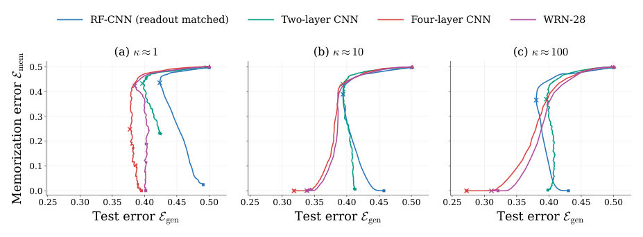
<figcaption class="paper-figure-caption"><b>Fig 1.</b> Figure 1: Generalization along the path to memorization. Test error on 2000 cats and dogs (x-axes) versus classification error on the randomly labelled automobiles (y-axes) taken from the CIFAR10 dataset. The fixed training set has n = 7000 images: 2800 cats, 2800 dogs with their respective labels, and 1400 automobiles with independent random labels. Panels vary the overparametrization ratio κ = P/n ≈1, 10, 100, where P counts optimized parameters. Curves average about 30 completed seeds; a centered arithmetic average of up to seven neighboring recorded times is applied to both coordinates for display, preserving the initial and final values. These parametric curves trace the two errors as...</figcaption>
</figure>
<figure class="paper-figure-card">
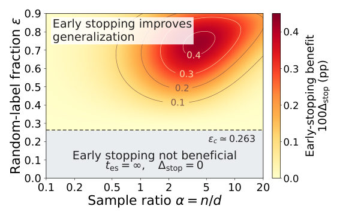
<figcaption class="paper-figure-caption"><b>Fig 2.</b> Figure 2: The generalization cost of training to interpolation. For γ = π/5, δ0 = 0, and λ = 0, colors show 100∆stop from Eq. (16) in percentage points, comparing interpolation with optimal stopping for the same kernel. The gray region has exactly zero stopping benefit. The dashed line, εc ≃0.2633 (for γ = π/5), separates it from a region with a finite optimal stopping time, independently of α. Contours mark benefits of 0.1, 0.2, 0.3, and 0.4 percentage points.</figcaption>
</figure>
<figure class="paper-figure-card">
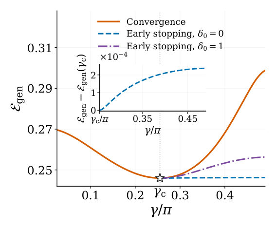
<figcaption class="paper-figure-caption"><b>Fig 3.</b> Figure 3: Test error at interpolation and optimal stopping. We fix α = 1.5, ε = 0.1, and λ = 0 and evaluate Eqs. (9) and (10). The solid curve is Egen(∞; γ); the dashed and dash-dotted curves are Egen(τes; γ) for δ0 = 0 and 1. For γ ≤γc(ε), Eq. (15) gives tes = ∞, so all three curves coincide. The star marks the unique global optimum at γc(ε)/π ≃0.2550 from Eq. (14). For larger angles, finite optimal stopping remains strictly above this value; the gap is more visible for δ0 = 1. The inset zooms on the increasing excess Egen(τes; γ) −Egen(∞; γc(ε)) for the dashed blue curve at δ0 = 0, to highlight that the minimum is truly attained only at γ = γc(ε).</figcaption>
</figure>
<figure class="paper-figure-card">
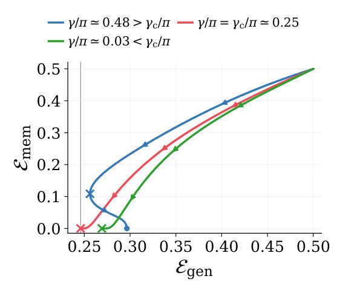
<figcaption class="paper-figure-caption"><b>Fig 4.</b> Figure 4: Kernel geometry controls the gradient-flow trajectory. We fix α = 1.5, ε = 0.1, δ0 = 1, and λ = 0. Arrows indicate increasing time; the cross marks test-error minima and the blue dot marks convergence. The blue trajectory benefits from early stopping. Red and green improve until interpolation, but only the critical red kernel attains the test-error bound in Eq. (18) (vertical line).</figcaption>
</figure>
<figure class="paper-figure-card">
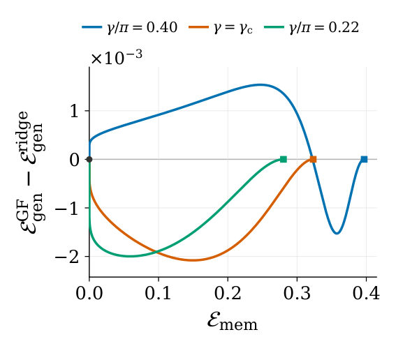
<figcaption class="paper-figure-caption"><b>Fig 5.</b> Figure 5: Gradient flow and ridge follow different parametric paths. We fix α = 5, ε = 0.1, and δ0 = 0, with γ/π = 0.40, γ = γc(ε) (γc(ε)/π ≃0.2550), and γ/π = 0.22. For each kernel, we plot the test-error difference between unregularized kernel gradient flow and converged kernel ridge regression at the same memorization error. Negative values favor gradient flow. Squares mark the shared t →0+ and λ →∞classification limits; the circle marks the shared interpolating endpoint. Curves are numerical evaluations of Eqs. (9)–(11); we use the ERM ridge result of Farné et al. (2026). More details in Appendix E.</figcaption>
</figure>
</div>
<p><strong>Summary.</strong> This paper analyzes when early stopping is necessary when training on noisy data, combining theoretical derivations for kernel gradient flow with empirical CNN experiments. It finds that deep networks can maintain good generalization even after fitting noise, and theory provides a phase diagram showing conditions where full interpolation can outperform early stopping.</p>
<p><strong>Why it may be interesting.</strong> The analysis of generalization dynamics in the presence of noise, using tools from statistical physics (kernel flow), provides insights into the stability and optimal training regimes of complex, overparameterized neural networks.</p>
<details>
<summary>Detailed structure</summary>
<p><strong>Main problem.</strong> The paper investigates the conditions under which early stopping is beneficial for generalization when training models on data corrupted by intrinsic label noise.</p>
<p><strong>Main result.</strong> Theoretically, it derives a phase diagram showing that interpolation can outperform early stopping. Experimentally, it shows that for deep CNNs, test error deterioration is often absent, suggesting early stopping is unnecessary.</p>
<p><strong>Method.</strong> The authors use a combination of theoretical analysis on kernel gradient flow in the high-dimensional limit and extensive empirical experiments on CIFAR10 using various CNN architectures.</p>
<p><strong>Model / system.</strong> The theoretical model uses kernel gradient flow on a synthetic noisy classification task (RAF model). Experimentally, it uses CNNs trained on CIFAR10 data where a fraction of labels are randomly corrupted.</p>
<p><strong>Key observables.</strong> Test error (generalization error), memorization error, and the optimal training time.</p>
<p><strong>Important parameters / regimes.</strong> The fraction of random labels ($\epsilon$), the kernel geometry parameter ($\gamma$), and the model depth/capacity.</p>
<p><strong>Assumptions / limitations.</strong> The theoretical analysis relies on the high-dimensional limit ($n, d 	o \infty$ with $n/d 	o \alpha$).</p>
<p><strong>Figures summary.</strong> Figures show generalization vs. memorization error curves for different architectures, and the theoretical analysis yields a phase diagram controlling the optimal stopping time.</p>
<p><strong>Paper structure.</strong> The paper first establishes the problem using empirical CNN experiments, then develops a rigorous theoretical framework using kernel gradient flow to derive a phase diagram, culminating in a discussion of the implications for deep learning generalization.</p>
</details>
<details>
<summary>Abstract</summary>
<p>Early stopping is commonly used to prevent fitting label noise from degrading generalization. Does this mean that, when a positive fraction of the training labels is intrinsically unpredictable, the best test error must occur before interpolation? Experiments on a CIFAR10 classification task with randomly labeled examples motivate the opposite possibility: although fixed-feature and shallow models exhibit late-time deterioration of the test error, the need for early stopping essentially disappears in larger, deeper convolutional networks even after the random labels have all been classified correctly. We determine when late-time deterioration disappears entirely in a solvable setting. For kernel gradient flow on a synthetic noisy classification task, we derive sharp high-dimensional learning curves and obtain a phase diagram controlled by the balance between the linear kernel component that learns the shared relation between inputs and labels and the higher-order components that enable fitting the label noise. In one regime, generalization is optimized at finite time and early stopping is necessary. In another, generalization improves until interpolation, but the endpoint is suboptimal across kernels. At the boundary, the interpolating endpoint attains the lowest generalization error across the considered kernel family and all training times. Thus, even with extensive irreducible label noise, interpolation can outperform early stopping. The neural-network experiments leave open how learned representations acquire an analogous favorable geometry.</p>
</details>
<p><sub><a href="#top">↑ back to top</a></sub></p>
</details>
<h2 id="secondary-cond-mat-archives">Secondary cond-mat archives</h2>
<p><em>Papers from cond-mat.mtrl-sci, mes-hall, other, soft, supr-con. These archives are de-prioritized — they appear at the end regardless of relevance score.</em></p>
<h3 id="relevant-in-secondary-archives-27">Relevant in secondary archives (27)</h3>

<p><a id="paper-2610.33814"></a></p>
<h3 id="scattering-and-schmid-bulgadaev-transition-in-qubits-based-on-josephson-junction-chains"><a href="http://arxiv.org/abs/2610.33814v1">Scattering and Schmid-Bulgadaev Transition in Qubits Based on Josephson Junction Chains</a></h3>
<p><strong>Authors:</strong> Sviatoslav D. Krasin, Alexey Radkevich, Emil Rizvanov, Andrew G. Semenov<br>
<strong>Type:</strong> theory · <strong>Category:</strong> statistical mechanics · <strong>PDF:</strong> <a href="https://arxiv.org/pdf/2610.33814v1">https://arxiv.org/pdf/2610.33814v1</a><br>
<strong>Analysis basis:</strong> full PDF text, analyzed in chunks
<strong>Topic relevance:</strong> 🔥 <code>Keldysh / 2PI / non-Gaussian methods</code> <strong>4/5</strong> · <code>driven-dissipative phase transition</code> <strong>3/5</strong> · <code>QC/QI experiment</code> <strong>2/5</strong> · <code>methods for driven-dissipative</code> <strong>2/5</strong> · <code>non-equilibrium universality</code> <strong>2/5</strong> · <code>Frenkel-Kontorova</code> <strong>1/5</strong> · <code>correlated / nonlocal dissipation</code> <strong>1/5</strong> · <code>quantum measurements</code> <strong>1/5</strong></p>
<div class="figure-strip-hint">↔ Scroll figures horizontally</div>
<div class="paper-figures-scroll">
<figure class="paper-figure-card">
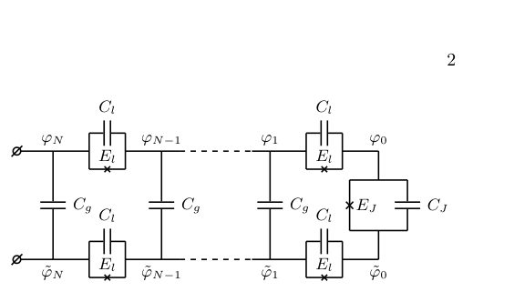
<figcaption class="paper-figure-caption"><b>Fig 1.</b> FIG. 1. The electrical circuit under consideration. EJ and CJ correspond to the qubit under investigation. In the original experimental setup [9], a SQUID is located at the right end of this circuit; in our model, we replace it with an effective Josephson junction (JJ) EJ with capacitance CJ. The param- eters El, Cl, and Cg describe the transmission line (bulk), in which the phase φ propagates.</figcaption>
</figure>
<figure class="paper-figure-card">
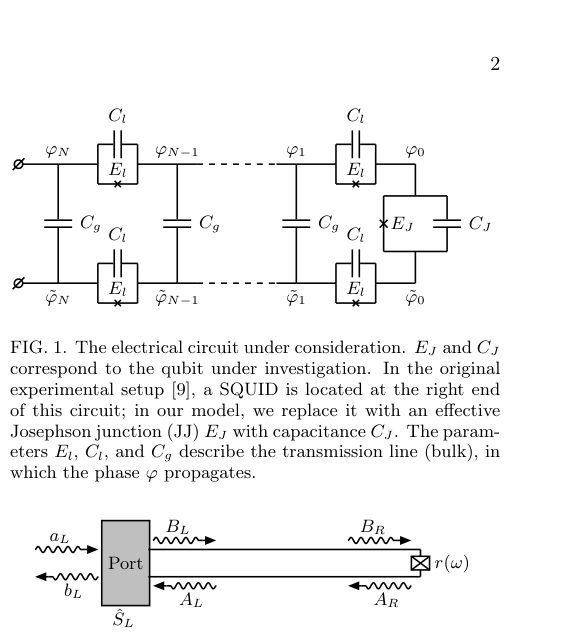
<figcaption class="paper-figure-caption"><b>Fig 2.</b> FIG. 2. The equivalent setup and plasma-wave scattering in it. ˆSL is the scattering matrix of the port at the left end of the transmission line (II.8). r(ω) is the reflection coefficient of the signal from the only qubit EJ.</figcaption>
</figure>
<figure class="paper-figure-card">
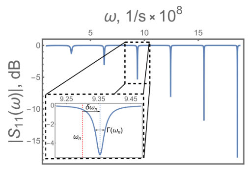
<figcaption class="paper-figure-caption"><b>Fig 3.</b> FIG. 4. Plot of |S11(ω)| for g = 12 (see Eq. (II.11)). It demonstrates the observable reflection in experiments [8], [9]. The inset provides a zoomed plot of an isolated peak shifted by δωn with finite non-zero width Γ(ωn). rL = 0.99, L = 10−2 m, EC = 300 MHz, EJ/EC = 10−1, v = 106 m/s.</figcaption>
</figure>
<figure class="paper-figure-card">
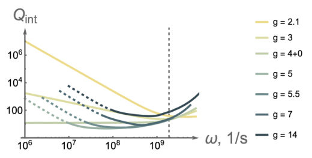
<figcaption class="paper-figure-caption"><b>Fig 4.</b> FIG. 6. Plots of Qint vs. ω in the weak-coupling limit. Ver- tical black dashed line demonstrates the EC scale (the UV- cutoff scale). Colorful lines are Qint plots, estimated with numerical calculations of Σ. Colorful dashed lines are Qint plots for ω &lt; m, where the theory cannot guarantee the cor- rectness of the quality factor calculated through Eq. (IV.8).</figcaption>
</figure>
<figure class="paper-figure-card">
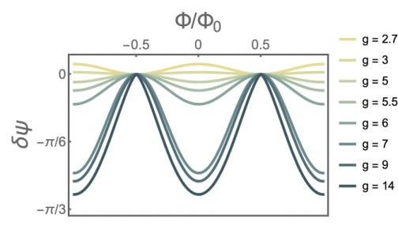
<figcaption class="paper-figure-caption"><b>Fig 5.</b> FIG. 5. Plots of δψ(ω, Φ) := arg(r(ω)) −arg(r(ω)|EJ =0 with ω = EC/10 for different g. Plots for g &gt; 4 have only mass m, higher orders in perturbation series are neglected. One can find here the special point Φ Φ0 = 0.5, where the behavior of these functions changes significantly with g and has the power-law dependence on |Φ −Φ0/2|.</figcaption>
</figure>
</div>

<p><strong>Summary.</strong> This theoretical work analyzes the Schmid-Bulgadaev quantum phase transition in superconducting qubits coupled to an environment. By using advanced field-theoretic methods, the authors predict unique, non-perturbative signatures—such as power-law flux dependence in frequency shifts—that characterize the superconducting phase. These predictions offer a concrete theoretical roadmap for interpreting modern low-temperature quantum experiments.</p>
<p><strong>Why it may be interesting.</strong> The study provides deep theoretical insight into how quantum dissipation drives a phase transition in superconducting circuits, offering measurable predictions for low-temperature experiments relevant to quantum measurement and coherence.</p>
<details>
<summary>Detailed structure</summary>
<p><strong>Main problem.</strong> The paper investigates the zero-temperature quantum phase transition known as the Schmid-Bulgadaev transition in superconducting qubits built from Josephson junction chains.</p>
<p><strong>Main result.</strong> The authors derive analytic expressions showing that in the non-perturbative superconducting regime, frequency shifts exhibit a power-law dependence on the SQUID flux, and quality factors show non-monotonous dependence on mode frequency.</p>
<p><strong>Method.</strong> The analysis employs the Keldysh formalism and advanced diagrammatic resummation techniques to handle non-perturbative effects across the quantum phase transition.</p>
<p><strong>Model / system.</strong> The system consists of a Josephson junction chain terminated by a SQUID (qubit) and coupled to an external environment modeled as a transmission line. The dynamics are analyzed using an effective action derived from the circuit Lagrangian.</p>
<p><strong>Key observables.</strong> Frequency-dependent reflection coefficient $S_{11}(\omega)$, mode frequency shifts ($\delta\omega_n$), and internal quality factors ($Q_{int}(\omega)$).</p>
<p><strong>Important parameters / regimes.</strong> The critical environmental impedance crossing the resistance quantum ($R_Q$), the SQUID flux, and the coupling strength parameter $g$ relative to the critical value of 4.</p>
<p><strong>Assumptions / limitations.</strong> The analysis assumes the system is electrically insulated from its surroundings and neglects phase slips occurring within the bulk of the junction chain.</p>
<p><strong>Figures summary.</strong> Figure 1 illustrates the electrical circuit setup: a JJ chain connected to a SQUID qubit and an antenna. Figure 2 depicts the equivalent setup for plasma-wave scattering, defining the reflection coefficient $r(\omega)$.</p>
<p><strong>Paper structure.</strong> The paper builds from the circuit model and Lagrangian formulation, moves through deriving the effective action using the Keldysh technique, and culminates in the non-perturbative analysis of scattering observables like frequency shifts and quality factors.</p>
</details>
<details>
<summary>Abstract</summary>
<p>A Josephson junction subject to an ohmic dissipative environment undergoes a zero-temperature quantum phase transition called Schmid-Bulgadaev transition form an insulating state to a superconducting state upon increasing the impedance of the environment above the resistance quantum. Superconducting qubits based on Josephson junction chains represent a system where it is possible to dynamically explore both sides of this transition by probing the scattering of individual plasma modes of the junction chain on a SQUID at the boundary which was achieved in recent experiments. Here, we provide a theoretical analysis of the scattering in the system paying special attention to the non-perturbative superconducting regime. We find that in this regime, a specific diagrammatic resummation must be performed in order to correctly account for fluctuation renormalization of the SQUID's potential. We find analytic expressions for the modes' frequency shifts and quality factors which together provide a full description of scattering. We argue that the non-perturbative nature of the superconducting phase manifests itself through a power-law dependence of the frequency shifts on the SQUID flux and through non-monotonous dependence of the quality factors on the mode frequency. Our predictions may be readily verified in modern low-temperature experiments.</p>
</details>
<p><sub><a href="#top">↑ back to top</a></sub></p>

<p><a id="paper-2610.34465"></a></p>
<h3 id="photoinduced-charging-and-spatially-selective-photochemistry-on-ferroelectric-surfaces"><a href="http://arxiv.org/abs/2610.34465v1">Photoinduced charging and spatially selective photochemistry on ferroelectric surfaces</a></h3>
<p><strong>Authors:</strong> Sergei V. Kalinin<br>
<strong>Type:</strong> theory · <strong>Category:</strong> other · <strong>PDF:</strong> <a href="https://arxiv.org/pdf/2610.34465v1">https://arxiv.org/pdf/2610.34465v1</a><br>
<strong>Analysis basis:</strong> full PDF text, analyzed in chunks
<strong>Topic relevance:</strong> <code>Keldysh / 2PI / non-Gaussian methods</code> <strong>3/5</strong> · <code>driven-dissipative phase transition</code> <strong>3/5</strong> · <code>methods for driven-dissipative</code> <strong>3/5</strong> · <code>analog quantum simulation</code> <strong>2/5</strong> · <code>non-equilibrium universality</code> <strong>2/5</strong> · <code>quantum measurements</code> <strong>2/5</strong> · <code>correlated / nonlocal dissipation</code> <strong>1/5</strong></p>
<div class="figure-strip-hint">↔ Scroll figures horizontally</div>
<div class="paper-figures-scroll">
<figure class="paper-figure-card">
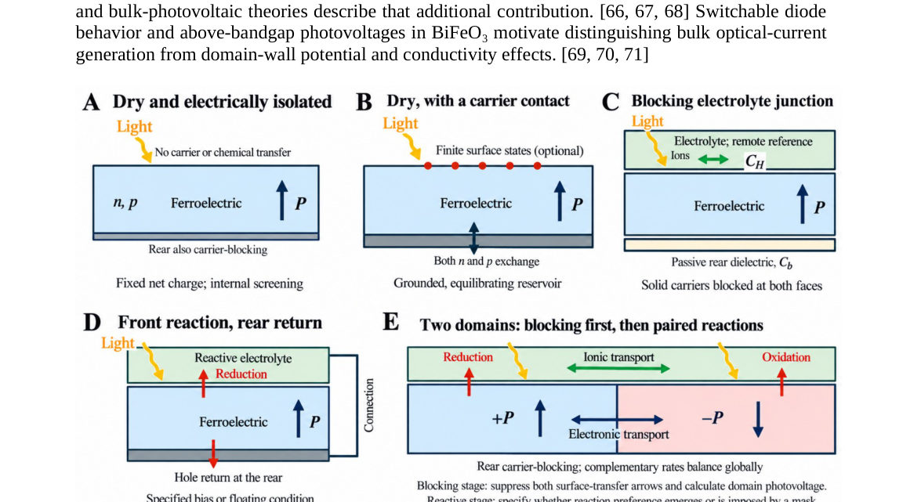
<figcaption class="paper-figure-caption"><b>Fig 1.</b> Figure 1. The five physical cases and the paths available to charge. A: an isolated dry slab, with both electronic faces blocking. B: a dry surface with a rear contact that exchanges electrons and holes; finite electronic surface states are included as a declared variant. C: a blocking solid–electrolyte junction with a passive rear dielectric capacitance; neither rear nor front exchanges solid carriers. D: front reduction with a hole-conducting rear and an external complementary reaction; exchanging the carrier and reaction labels gives the oxidation counterpart. E: opposite domains with a blocking rear, considered first without reactions and then with complementary surface transfer and...</figcaption>
</figure>
<figure class="paper-figure-card">
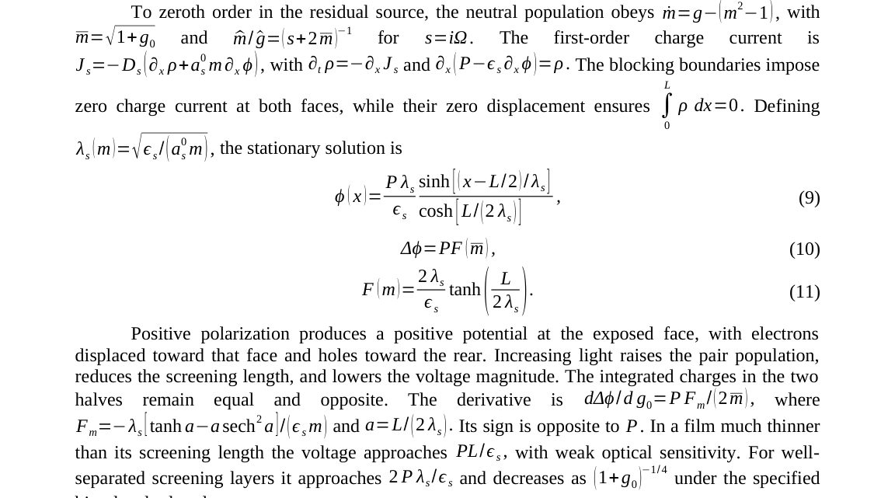
<figcaption class="paper-figure-caption"><b>Fig 2.</b> Figure 2 compares the two polarization orientations and the nonpolar semiconductor. The illustrative parameters are L=ϵ s=1, as</figcaption>
</figure>
<figure class="paper-figure-card">
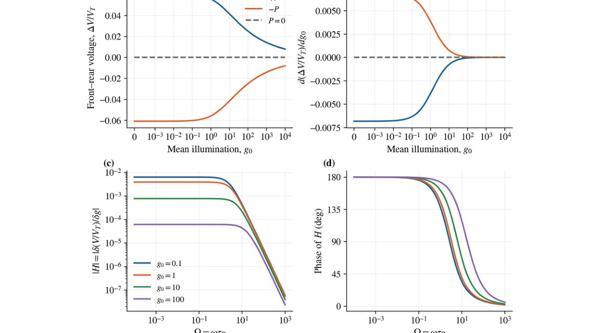
<figcaption class="paper-figure-caption"><b>Fig 3.</b> Figure 2. Isolated dry-film charging (A). (a,b) Stationary front–rear potential and its exact optical derivative for opposite residual polarizations and the symmetric nonpolar control. (c,d) Absolute optical amplitude and phase for +P at four mean light levels. The phase is referred to positive incident-light modulation; −P has the same amplitude and a 180</figcaption>
</figure>
<figure class="paper-figure-card">
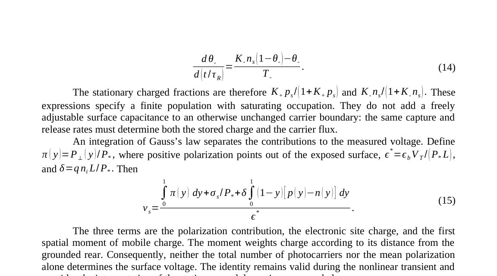
<figcaption class="paper-figure-caption"><b>Fig 4.</b> Figure 3(a,b) compares the stationary exposed potentials with and without sites. For outward polarization, the finite-site voltage decreases from approximately 1.859V T in darkness to 0.170V T at</figcaption>
</figure>
<figure class="paper-figure-card">
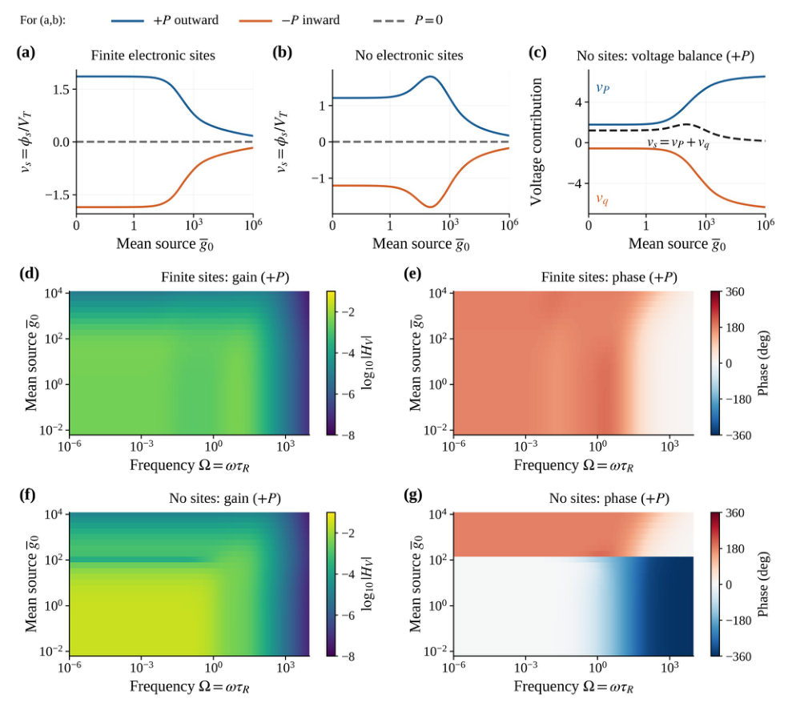
<figcaption class="paper-figure-caption"><b>Fig 5.</b> Figure 3. Grounded dry-film charging (case B). (a,b) Stationary surface potential with finite reversible electronic sites and without sites, respectively, for the two prepared polarities and the nonpolar reference. The polarity key above the figure applies to (a,b). (c) Polarization contribution v P, mobile-charge contribution vq, and their sum vs=v P+vq for the no-site, outward-polarized film. The dashed black curve in (c) is the total voltage. (d,e) Optical gain and phase with finite sites; (f,g) gain and phase without sites. The maps show the outward preparation and the absolute derivative H V=δ (ϕs/V T )/δ g0, without a mean-generation multiplier. Phase is referenced to positive...</figcaption>
</figure>
</div>

<p><strong>Summary.</strong> This work develops a comprehensive theoretical framework to model light-induced charge dynamics and photochemistry at ferroelectric surfaces. By analyzing five distinct physical coupling scenarios, it quantitatively links charge transport, electrostatics, and interfacial kinetics. The resulting model provides a foundation for interpreting complex photo-response measurements, such as modulated photovoltage imaging.</p>
<p><strong>Why it may be interesting.</strong> While focused on condensed matter electrochemistry, the rigorous coupling of electrostatics, charge transport, and reaction kinetics in a non-equilibrium setting shares methodological parallels with open quantum systems modeling where environmental coupling dictates system dynamics.</p>
<details>
<summary>Detailed structure</summary>
<p><strong>Main problem.</strong> The paper analyzes light-induced charging and spatially selective photochemistry on ferroelectric surfaces, aiming to provide a comprehensive quantitative description beyond simple polarization-induced band-bending.</p>
<p><strong>Main result.</strong> A generalized semiconductor transport and charge-conservation framework is developed that distinguishes five distinct physical cases based on charge return paths, explaining the observed range of photodeposition morphologies.</p>
<p><strong>Method.</strong> The authors use analytical solutions and numerical evaluations based on a semiconductor transport framework that couples electrostatics, carrier continuity equations, and interfacial kinetic laws.</p>
<p><strong>Model / system.</strong> The system involves ferroelectric surfaces (including domain patterns) interacting with external environments (dry or electrolyte). The model incorporates carrier generation, drift, diffusion, and polarization dynamics ($\Gamma_P\partial_t P = ...$).</p>
<p><strong>Key observables.</strong> Stationary potentials vs. illumination, differential optical spectra, finite light-step responses, reduction and oxidation rates, and photovoltage.</p>
<p><strong>Important parameters / regimes.</strong> Doping effects, polarization state, and the specific boundary conditions defining the charge return path (e.g., isolated film vs. electrolyte contact).</p>
<p><strong>Assumptions / limitations.</strong> The analysis explicitly retains the electrical and chemical boundaries to distinguish between transient charging and sustained chemical turnover.</p>
<p><strong>Figures summary.</strong> Figure 1 illustrates five physical cases (A-E) detailing the charge paths and polarization approximations for different ferroelectric/electrolyte interfaces.</p>
<p><strong>Paper structure.</strong> The paper builds a comprehensive framework by analyzing five distinct physical configurations (isolated, reservoir-coupled, blocking junction, reactive interface, coupled domains), deriving governing equations, and applying them to calculate various measurable quantities.</p>
</details>
<details>
<summary>Abstract</summary>
<p>Ferroelectric surfaces exhibit polarization-dependent photoreactivity and provide a route to program chemical patterns through local electrical control of polarization. Observations accumulated over several decades show reaction products in domain interiors, at domain boundaries, and in other selected regions, indicating that the mechanisms extend beyond a single polarization-induced band-bending picture. Here we analyze light-induced charging and interfacial reactions on uniformly polarized ferroelectrics and domain patterns, for dry surfaces and surfaces in contact with an electrochemically active solution. A common semiconductor transport and charge-conservation framework distinguishes five cases: an isolated dry ferroelectric, a dry ferroelectric connected to a carrier reservoir, a blocking ferroelectric-electrolyte junction, a reactive interface with an external carrier return, and two opposite domains coupled through the solid and electrolyte. Analytical solutions and numerical evaluations connect stationary potentials versus illumination to differential optical spectra and finite light-step responses. We further examine the doping effects on static potentials in all five cases and dynamic photovoltage in the isolated film and a fixed-polarization, bare-surface contacted-film variant. For reactive interfaces, the same framework determines reduction and oxidation rates, their spatial distributions, and accumulated reaction amount. The analysis covers surface charging and photochemical conversion beyond deposition, while retaining the electrical and chemical boundaries that distinguish finite charging from sustained turnover, and explains the observed range of photodeposition morphologies. Finally, this framework builds the theoretical foundation for the modulated photovoltage imaging methods that can readily be realized in SPM under illumination.</p>
</details>
<p><sub><a href="#top">↑ back to top</a></sub></p>

<p><a id="paper-2610.35284"></a></p>
<h3 id="constant-force-amplifies-pulse-solitons-via-polarization-coupling-in-mechanical-metamaterials"><a href="http://arxiv.org/abs/2610.35284v1">Constant force amplifies pulse solitons via polarization coupling in mechanical metamaterials</a></h3>
<p><strong>Authors:</strong> Zehuan Tang, Yuanwen Gao<br>
<strong>Type:</strong> theory · <strong>Category:</strong> other · <strong>PDF:</strong> <a href="https://arxiv.org/pdf/2610.35284v1">https://arxiv.org/pdf/2610.35284v1</a><br>
<strong>Analysis basis:</strong> full PDF text, analyzed in chunks
<strong>Topic relevance:</strong> <code>Frenkel-Kontorova</code> <strong>3/5</strong> · <code>Keldysh / 2PI / non-Gaussian methods</code> <strong>2/5</strong> · <code>analog quantum simulation</code> <strong>2/5</strong> · <code>driven-dissipative phase transition</code> <strong>2/5</strong> · <code>methods for driven-dissipative</code> <strong>2/5</strong> · <code>correlated / nonlocal dissipation</code> <strong>1/5</strong> · <code>non-equilibrium universality</code> <strong>1/5</strong></p>
<div class="figure-strip-hint">↔ Scroll figures horizontally</div>
<div class="paper-figures-scroll">
<figure class="paper-figure-card">
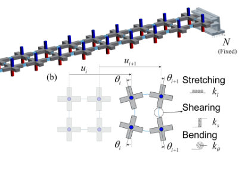
<figcaption class="paper-figure-caption"><b>Fig 1.</b> FIG. 1. (a) Schematic of the mechanical model, with the soliton core region covered by the magnetic field. (b) Schematic of the modeling approach. Each cross unit has two polarization components, a translational component 𝑢𝑖 and a rotational component 𝜃𝑖. The flexible hinges connecting the cross</figcaption>
</figure>
<figure class="paper-figure-card">
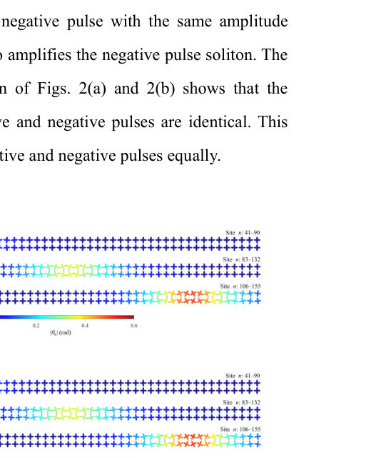
<figcaption class="paper-figure-caption"><b>Fig 2.</b> FIG. 2. (a) Plot of 𝐴(𝑇) for the positive pulse, with the actual propagation from numerical simulations shown on the right. (b) Plot of 𝐴(𝑇) for the negative pulse, with the actual propagation from numerical simulations shown on the right. The 𝐴(𝑇) curves in the two plots are perfectly</figcaption>
</figure>
<figure class="paper-figure-card">
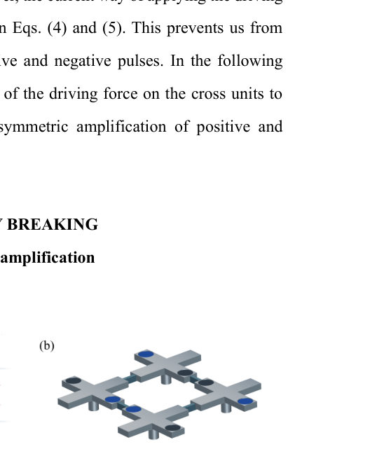
<figcaption class="paper-figure-caption"><b>Fig 3.</b> FIG. 3. (a) Schematic of the structure with eccentrically positioned magnets. The blue circles represent magnets. They are arranged alternately at the upper and lower ends of successive cross units. The black circles represent counterweights with the same mass as the magnets. These counterweights keep the mass centers of the cross units at their geometric centers. 𝑟 is the arm length of the cross unit minus the magnet radius. (b) Three-dimensional view of the structural units.</figcaption>
</figure>
<figure class="paper-figure-card">
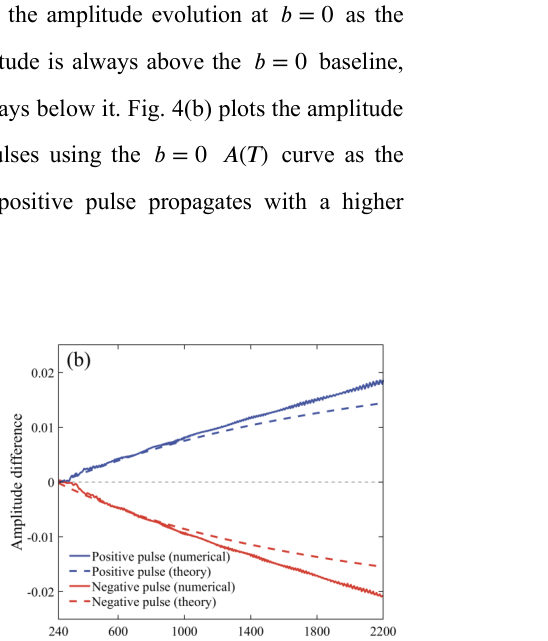
<figcaption class="paper-figure-caption"><b>Fig 4.</b> FIG. 4. (a) | 𝐴(𝑇)| curves for positive and negative pulses. The blue curve represents the positive pulse, the red curve represents the negative pulse, and the gray dashed curve is the 𝑏= 0 baseline. (b) Amplitude difference curves for the positive and negative pulses relative to the 𝑏= 0 baseline.</figcaption>
</figure>
<figure class="paper-figure-card">
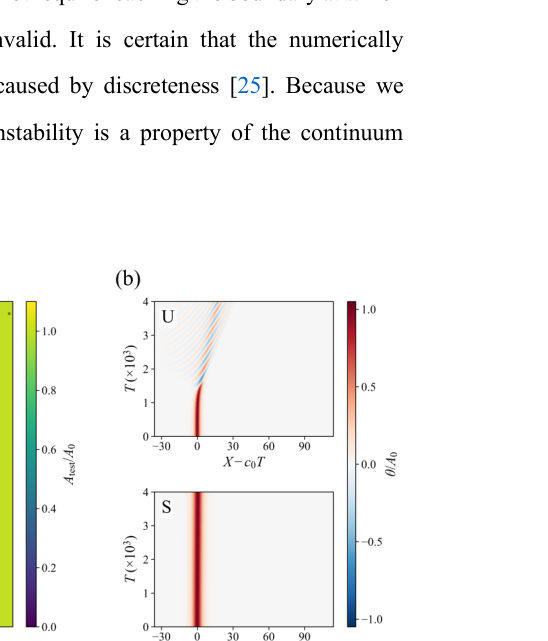
<figcaption class="paper-figure-caption"><b>Fig 5.</b> FIG. 5. (a) Soliton stability phase diagram for different parameter values. The fluorescent green region is the stable region for solitons, and the dark green region is the unstable region. The black solid line is the boundary given by the condition for a real-valued width 𝑊= 0, and the red dashed line is the boundary given by the stability condition 𝐸0′(𝑐) = 0. (b) Spatiotemporal plots of soliton propagation at two representative points in the stable and unstable regions. The horizontal coordinate 𝑋−𝑐0𝑇 is the soliton-centered reference coordinate based on 𝑐0.</figcaption>
</figure>
</div>

<p><strong>Summary.</strong> This paper analyzes the amplification of pulse solitons in mechanical metamaterials driven by a constant external force. It demonstrates that polarization coupling allows the force to drive the soliton, and critically, that shifting the force application point breaks the symmetry, leading to unequal amplification of positive versus negative pulses. The work provides a theoretical framework for understanding symmetry breaking in nonlinear wave dynamics.</p>
<p><strong>Why it may be interesting.</strong> The study models energy transfer and nonlinear wave dynamics in a mechanical system, which shares mathematical parallels with driven nonlinear oscillators and coupled field theories relevant to quantum optics and open quantum systems.</p>
<details>
<summary>Detailed structure</summary>
<p><strong>Main problem.</strong> The study investigates how a constant external force amplifies pulse solitons in mechanical metamaterials via polarization coupling, and how this coupling can break the symmetry of this amplification.</p>
<p><strong>Main result.</strong> Vector solitons can be amplified by a constant force through polarization coupling, and applying the force eccentrically breaks the symmetry, leading to unequal amplification of positive and negative pulses.</p>
<p><strong>Method.</strong> The analysis employs numerical simulations, continuum limit approximations, and the adiabatic approximation to derive energy balance equations and amplitude evolution equations.</p>
<p><strong>Model / system.</strong> The system is a mechanical metamaterial modeled as a chain of coupled units with two polarization components: translational ($U_i$) and rotational ($    heta_i$). The dynamics are governed by coupled equations of motion incorporating coupling springs.</p>
<p><strong>Key observables.</strong> Soliton amplitude evolution ($A(T)$), energy balance ($dE/dT$), and the symmetry/asymmetry of amplification between positive and negative pulses.</p>
<p><strong>Important parameters / regimes.</strong> The constant driving force ($F$), the eccentricity parameter ($b$), and the coupling constants ($K_	heta, K_s$).</p>
<p><strong>Assumptions / limitations.</strong> The analysis relies heavily on the adiabatic approximation, assuming the soliton retains its form while being driven by a weak external force ($F \ll 1$).</p>
<p><strong>Figures summary.</strong> Figures illustrate the schematic model, the perfect symmetry of amplification under central force application, and the resulting asymmetric amplification when the force is applied eccentrically.</p>
<p><strong>Paper structure.</strong> The paper progresses from establishing the coupled discrete equations of motion, deriving the continuum limit and energy balance, applying the adiabatic approximation, and finally analyzing the symmetry-preserving and symmetry-breaking effects of the external force.</p>
</details>
<details>
<summary>Abstract</summary>
<p>Unlike kink solitons with nonzero topological charge, pulse solitons cannot be driven by the experimentally most easily implemented constant force because of their zero topological charge. Here, we focus on a vector soliton with two polarization components: a pulse soliton component (rotation) and a kink soliton component (translation). We apply a constant force at the mass centers of the units, thereby driving the translational component with a constant force. Numerical simulations show that energy injected into the translational component can be transferred simultaneously to the rotational component through coupling, thereby achieving equal amplification of positive and negative pulses. Next, we change the application of this constant force to eccentric loading and find that the initially symmetric amplification of positive and negative solitons gradually becomes asymmetric over time. These phenomena are all explained by a theoretical model based on the adiabatic approximation, which gives a quantitative relation for the amplitude evolution, while the higher-order correction terms arising from the coupling effect also explain the origin of asymmetric transmission under eccentric driving. Our results demonstrate that vector solitons possess a unique capability for pulse soliton amplification by a constant force through polarization coupling and that this coupling can further modulate the symmetry between positive and negative pulses.</p>
</details>
<p><sub><a href="#top">↑ back to top</a></sub></p>

<p><a id="paper-2610.35737"></a></p>
<h3 id="local-broadband-gigahertz-spectroscopy-via-squid-on-tip-dc-readout"><a href="http://arxiv.org/abs/2610.35737v1">Local Broadband Gigahertz Spectroscopy via SQUID-on-Tip DC Readout</a></h3>
<p><strong>Authors:</strong> Senne Vervoort, Lukas Nulens, Julia Baumgarten, Daan B. Boltje, Jessalyn DeVine, Alejandro V. Silhanek, Joris Van de Vondel, Kaveh Lahabi<br>
<strong>Type:</strong> experiment · <strong>Category:</strong> other · <strong>PDF:</strong> <a href="https://arxiv.org/pdf/2610.35737v1">https://arxiv.org/pdf/2610.35737v1</a><br>
<strong>Analysis basis:</strong> full PDF text, analyzed in chunks
<strong>Topic relevance:</strong> <code>quantum measurements</code> <strong>3/5</strong> · <code>QC/QI experiment</code> <strong>2/5</strong> · <code>correlated / nonlocal dissipation</code> <strong>1/5</strong> · <code>driven-dissipative phase transition</code> <strong>1/5</strong></p>
<div class="figure-strip-hint">↔ Scroll figures horizontally</div>
<div class="paper-figures-scroll">
<figure class="paper-figure-card">
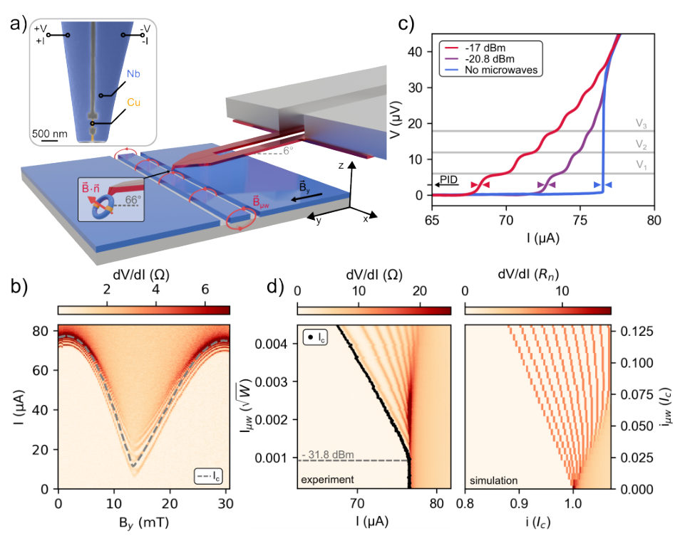
<figcaption class="paper-figure-caption"><b>Fig 1.</b> Figure 1: a) Sketch of the QuantaMap SQUID probe showing the spatial orientation of the cantilever with respect to the horizontal sample surface (xy-plane). The microwave magnetic ( ⃗Bµw) field in a CPW is indicated by red arrows. The component of the microwave field normal to the SQUID ( ⃗B · ⃗n) is shown in the zoom. ⃗By indicates the applied magnetic field to obtain the data in panel b. The inset shows a false-colored SEM image of the SQUID on the cantilever, where Nb is indicated in blue and Cu in yellow. b) Simultaneous current-field oscillations and Shapiro response with a −20 dBm microwave signal applied at 2.873 GHz (color) and the current-field oscillations of Ic with no microwave...</figcaption>
</figure>
<figure class="paper-figure-card">
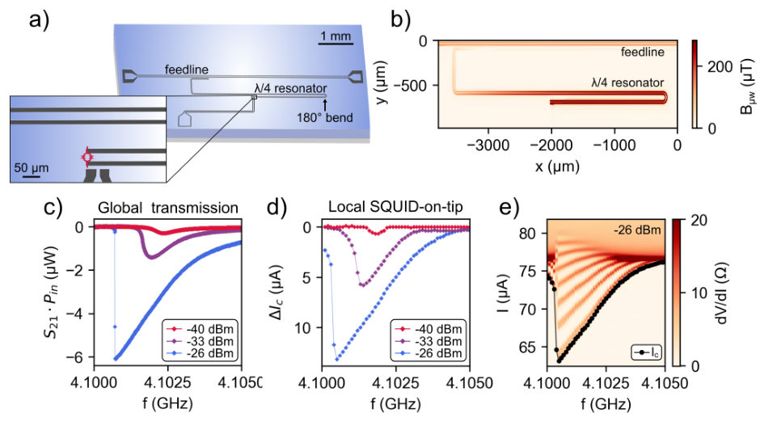
<figcaption class="paper-figure-caption"><b>Fig 2.</b> Figure 2: a) Layout of the λ/4 CPW resonator. The inset shows the shorted end of the resonator with the SQUID position in red. b) Variation of the microwave magnetic field amplitude through the SQUID as a function of position along the λ/4 resonator, extracted from Sonnet simulations with 13 dBm driving power. c) S21 of the CPW resonator scaled by the input power as function of frequency from the linear (red curve, −40 dBm) to the non-linear regime (purple and blue curve −33 dBm and −26 dBm, respectively). d) Change in the critical current of the SQUID as a function of frequency for the same input powers as in panel c. e) dV/dI as function of current and frequency driven at −26 dBm. Black...</figcaption>
</figure>
<figure class="paper-figure-card">

<figcaption class="paper-figure-caption"><b>Fig 3.</b> Figure 3: a) Topographic image of the shorted end of the resonator. b) ∆Ic as function of x and y coordinate, simultaneously obtained with the topography image. Grey lines correspond to the edges of the resonator. c) dV/dI as function of x and y coordinate, simultaneously obtained with the topography and ∆Ic, respectively. d) Normalized change in critical current (red), simulated amplitude of the microwave magnetic field (blue), and simulated total flux through the probe (green) along the red vertical line in the inset. The gray dashed lines represent the edges of the resonator. e) Normalized change in critical current (red), simulated amplitude of the microwave magnetic field (blue) and...</figcaption>
</figure>
<figure class="paper-figure-card">

<figcaption class="paper-figure-caption"><b>Fig 4.</b> Figure 4: a) Measured ∆Ic as a function of position near the 180◦bend. The resonator edges are overlaid in grey. b) Simulated magnetic flux integrated over the complete probe geometry as a function of position near the 180◦bend of the resonator. Simulations were performed with 13 dBm input power. c) Simulated spatial distributions of magnetic flux through the probe geometry for the six positions indicated in panel b.</figcaption>
</figure>
<figure class="paper-figure-card">

<figcaption class="paper-figure-caption"><b>Fig 5.</b> Figure 5: a) Electrical connections to the probe containing the SOT. All lines are filtered using in-house made low-pass (LP) filters with a cut-off frequency around 1 kHz. b) Schematic of the in-house made low-pass filter used to filter the electrical connections to the probe.</figcaption>
</figure>
</div>

<p><strong>Summary.</strong> This work introduces a novel SQUID-on-tip microscope that integrates microwave spectroscopy, magnetic sensing, and topography. By converting local GHz microwave signals into measurable DC Shapiro steps, the technique allows for unprecedented, spatially resolved mapping of microwave fields within superconducting circuits. This capability is vital for correlating circuit dynamics with the local structural and magnetic environment of superconducting devices.</p>
<p><strong>Why it may be interesting.</strong> The ability to map local microwave fields with high spatial resolution provides a powerful tool for understanding dissipation and non-linear dynamics in superconducting circuits, which is crucial for quantum device engineering.</p>
<details>
<summary>Detailed structure</summary>
<p><strong>Main problem.</strong> Standard microwave measurements fail to resolve the local electromagnetic environment and device features governing superconducting microwave circuits.</p>
<p><strong>Main result.</strong> The SQUID-on-tip setup successfully reproduces power-dependent resonance and allows for simultaneous, spatially resolved mapping of microwave fields, topography, and static magnetic fields.</p>
<p><strong>Method.</strong> The technique combines microwave spectroscopy, nanoscale magnetic sensing, and topography using a tapping-mode SQUID-on-tip microscope.</p>
<p><strong>Model / system.</strong> The platform uses a SQUID coupled to a superconducting coplanar waveguide (CPW) resonator, exploiting the nonlinear Josephson response to convert local GHz excitations into measurable DC Shapiro steps.</p>
<p><strong>Key observables.</strong> Shapiro steps, critical current suppression ($\Delta I_c$), local microwave field amplitude ($ ext{B}_{\mu ext{w}}$), and topography.</p>
<p><strong>Important parameters / regimes.</strong> Intrinsic Josephson Timescale ($f_c = 96.2$ GHz); spatial resolution limited by probe geometry.</p>
<p><strong>Assumptions / limitations.</strong> The SQUID response depends only on the normal component of the magnetic field; spatial resolution is limited by the superconducting probe leads.</p>
<p><strong>Figures summary.</strong> Figures show schematics of the SQUID probe, $I-V$ curves demonstrating Shapiro steps, spatial maps of $\Delta I_c$ confirming field localization, and height dependence of the magnetic field.</p>
<p><strong>Paper structure.</strong> The paper introduces the combined SQUID-on-tip platform, demonstrates its ability to measure microwave resonance locally, and uses simulations to model the field mapping and spatial resolution limits.</p>
</details>
<details>
<summary>Abstract</summary>
<p>Superconducting microwave circuits are shaped by their local electromagnetic environment, yet standard microwave measurements do not resolve the local fields and device features that govern their behavior. Here, we combine microwave spectroscopy, nanoscale magnetic sensing, and topographic imaging in a single tapping-mode SQUID-on-tip microscope. The nonlinear Josephson response converts local GHz excitations into Shapiro steps, enabling quantitative measurements of microwave frequency signals and their excitation strength using only DC readout. Applied to a superconducting coplanar waveguide resonator, local spectroscopy reproduces the power-dependent resonance and nonlinear bifurcation observed in microwave transmission measurements. Spatially resolved measurements map the microwave response while simultaneously recording topography and static magnetic features, including vortices and Meissner screening currents. Electromagnetic simulations reveal how coupling through the superconducting probe leads limits spatial resolution and guides localized detector designs. Together, these capabilities establish a platform for correlating microwave circuit dynamics with the local structural and magnetic environment of superconducting devices.</p>
</details>
<p><sub><a href="#top">↑ back to top</a></sub></p>

<p><a id="paper-2610.34353"></a></p>
<h3 id="the-evolution-and-current-state-of-swift-heavy-ion-track-modeling"><a href="http://arxiv.org/abs/2610.34353v1">The Evolution and Current State of Swift-Heavy-Ion Track Modeling</a></h3>
<p><strong>Authors:</strong> N. Medvedev, A. E. Volkov<br>
<strong>Type:</strong> theory · <strong>Category:</strong> other · <strong>PDF:</strong> <a href="https://arxiv.org/pdf/2610.34353v1">https://arxiv.org/pdf/2610.34353v1</a><br>
<strong>Analysis basis:</strong> full PDF text, analyzed in chunks
<strong>Topic relevance:</strong> <code>non-equilibrium universality</code> <strong>3/5</strong> · <code>Keldysh / 2PI / non-Gaussian methods</code> <strong>2/5</strong> · <code>methods for driven-dissipative</code> <strong>2/5</strong></p>
<div class="figure-strip-hint">↔ Scroll figures horizontally</div>
<div class="paper-figures-scroll">
<figure class="paper-figure-card">

<figcaption class="paper-figure-caption"><b>Fig 1.</b> Figure 1. Schematic illustration of the processes induced by a swift heavy ion in matter, created by Microsoft Copilot AI, prompt based on the review [9].</figcaption>
</figure>
<figure class="paper-figure-card">

<figcaption class="paper-figure-caption"><b>Fig 2.</b> Figure 2. Example of the response of Al2O3 to deposition of 6 eV/atom energy into its electronic system at time 0 fs. Top panel: atomic snapshots at different times created with help of OVITO [44]. Bottom left panel: evolution of the electronic energy levels (molecular orbitals, band structure). Bottom right panel: corresponding band gap, and the atomic temperature. Vertical dashed lines mark the time instants corresponding to the atomic snapshots shown. Calculated with XTANT-3 [45].</figcaption>
</figure>
<figure class="paper-figure-card">

<figcaption class="paper-figure-caption"><b>Fig 3.</b> Figure 3. Radial distribution of electron density in Al2O3 irradiated by 167 MeV Xe ion.</figcaption>
</figure>
<figure class="paper-figure-card">

<figcaption class="paper-figure-caption"><b>Fig 4.</b> Figure 5. The energy associated with the nonthermal effects, as described above, forms a</figcaption>
</figure>
<figure class="paper-figure-card">

<figcaption class="paper-figure-caption"><b>Fig 5.</b> Figure 4. Fractions of energy in various systems in a 10 Å thick layer of Al2O3 irradiated by 167 MeV Xe ion. Total energy is defined by the deposition by SHI; the shell-resolved hole energies are shown for each element and the valence band; the electron-hole potential energy is associated with the bandgap energy and the number of excited electrons and holes.</figcaption>
</figure>
</div>

<p><strong>Summary.</strong> This paper provides a comprehensive review of modeling techniques for energy deposition from Swift Heavy Ions in materials. It critiques the limitations of the standard Two-Temperature Model by highlighting the failure of assumptions like local equilibrium. The authors advocate for advanced, multiscale computational methods that integrate non-equilibrium electron transport with molecular dynamics to accurately predict material modification in these extreme environments.</p>
<p><strong>Why it may be interesting.</strong> The detailed analysis of energy coupling across vastly different timescales (attoseconds to picoseconds) and the need to incorporate non-equilibrium physics (like nonthermal acceleration) touches upon open problems in non-equilibrium quantum dynamics and energy dissipation in solids.</p>
<details>
<summary>Detailed structure</summary>
<p><strong>Main problem.</strong> The paper reviews the complex modeling of energy deposition and material modification caused by Swift Heavy Ions (SHI) passing through matter.</p>
<p><strong>Main result.</strong> It demonstrates that simplified two-temperature models fail under SHI track conditions, necessitating advanced multiscale approaches that account for non-equilibrium and nonthermal effects.</p>
<p><strong>Method.</strong> The review contrasts analytical approximations (like the Two-Temperature Model) with advanced computational techniques, specifically combining Monte Carlo transport simulations with Molecular Dynamics.</p>
<p><strong>Model / system.</strong> The system is an SHI track interacting with target matter, involving coupled electronic and ionic energy dynamics across multiple time and length scales (fs to ps).</p>
<p><strong>Key observables.</strong> Electronic and ionic temperatures ($T_e, T_i$), energy fluxes ($\vec{q}_{e,i}$), and the resulting track structure/size.</p>
<p><strong>Important parameters / regimes.</strong> Electronic cooling time ($\sim 100$ fs), atomic response time ($\sim 100$ ps), and the energy deposited via nonthermal mechanisms.</p>
<p><strong>Assumptions / limitations.</strong> The primary limitations discussed are the assumptions of Local Thermal Equilibrium (LTE), weak coupling, and diffusive heat transport inherent in the standard Two-Temperature Model.</p>
<p><strong>Figures summary.</strong> Figure 1 schematically illustrates the complex physical processes induced by a swift heavy ion passing through matter.</p>
<p><strong>Paper structure.</strong> The paper systematically reviews the derivation of the Two-Temperature Model, identifies its failure points under SHI conditions, and then outlines the necessary advanced, multiscale modeling techniques required to accurately capture non-equilibrium and nonthermal energy transfer.</p>
</details>
<details>
<summary>Abstract</summary>
<p>This paper briefly reviews the modeling approaches to the swift heavy ion (SHI) track formation. It presents a step-by-step derivation of the two-temperature model, highlighting its underlying assumptions and approximations. Special attention is given to identifying assumptions that fail under the typical SHI track conditions, and what methods currently exist to go beyond them. As an alternative to analytical approximations, a combined Monte Carlo- molecular dynamics model is demonstrated, outlining its basic assumptions, their justifications, and validations. Finally, the paper addresses bottlenecks of the current multiscale approach, its remaining weaknesses, and necessary further developments of the theory and models.</p>
</details>
<p><sub><a href="#top">↑ back to top</a></sub></p>

<p><a id="paper-2610.34318"></a></p>
<h3 id="universal-scaling-of-the-little-parks-oscillation-amplitude"><a href="http://arxiv.org/abs/2610.34318v1">Universal Scaling of the Little-Parks Oscillation Amplitude</a></h3>
<p><strong>Authors:</strong> Yuelin Shen, Zixuan Huang, Xiaoying Xu, Wei Qin, Yufan Li<br>
<strong>Type:</strong> both · <strong>Category:</strong> other · <strong>PDF:</strong> <a href="https://arxiv.org/pdf/2610.34318v1">https://arxiv.org/pdf/2610.34318v1</a><br>
<strong>Analysis basis:</strong> full PDF text, analyzed in chunks
<strong>Topic relevance:</strong> <code>non-equilibrium universality</code> <strong>3/5</strong> · <code>Keldysh / 2PI / non-Gaussian methods</code> <strong>1/5</strong> · <code>correlated / nonlocal dissipation</code> <strong>1/5</strong> · <code>driven-dissipative phase transition</code> <strong>1/5</strong> · <code>methods for driven-dissipative</code> <strong>1/5</strong></p>
<div class="figure-strip-hint">↔ Scroll figures horizontally</div>
<div class="paper-figures-scroll">
<figure class="paper-figure-card">

<figcaption class="paper-figure-caption"><b>Fig 1.</b> FIG. 1: Little–Parks oscillation curves measured at different temperatures for (a) the Nb ring (r = 300 nm) and (b) the β-Bi2Pd ring (r = 225 nm); the dashed black lines indicate the measured amplitude and the dashed gray lines indicate the amplitude given by the GL theory. (c) Normalized Little–Parks oscillation amplitudes, ∆TC</figcaption>
</figure>
<figure class="paper-figure-card">

<figcaption class="paper-figure-caption"><b>Fig 2.</b> FIG. 2: Little–Parks oscillation amplitudes, ∆TC</figcaption>
</figure>
<figure class="paper-figure-card">

<figcaption class="paper-figure-caption"><b>Fig 3.</b> FIG. 3: (a) Normalized Little–Parks oscillation amplitudes, ∆TC</figcaption>
</figure>
<figure class="paper-figure-card">

<figcaption class="paper-figure-caption"><b>Fig 4.</b> Fig. 2 and Fig. S5.</figcaption>
</figure>
</div>

<p><strong>Summary.</strong> This paper resolves the theoretical puzzle surrounding the temperature dependence of the Little-Parks oscillation amplitude in superconducting rings. By developing a universal framework that accounts for thermal fluctuations via thermally activated phase slips, the authors successfully reconcile theoretical predictions with experimental measurements across various superconducting materials. This provides a robust scaling law for understanding superconducting phase-sensitive probes.</p>
<p><strong>Why it may be interesting.</strong> The incorporation of thermal fluctuations (TAPS) into the superconducting order parameter dynamics provides a mechanism to explain temperature dependence in superconducting response, which is relevant to understanding non-equilibrium dynamics in quantum materials.</p>
<details>
<summary>Detailed structure</summary>
<p><strong>Main problem.</strong> The theoretical understanding of the temperature-dependent amplitude of the Little-Parks oscillation remains incomplete, as conventional mean-field theories fail to capture its observed strong temperature variation.</p>
<p><strong>Main result.</strong> The authors developed a universal theoretical framework incorporating thermally activated phase slips that successfully scales the oscillation amplitude across diverse superconducting materials, resolving a long-standing theoretical-experimental discrepancy.</p>
<p><strong>Method.</strong> The analysis involves deriving the oscillation amplitude by modeling the resistance using an activated form that includes both thermodynamic and kinetic energy contributions, leading to a universal scaling law.</p>
<p><strong>Model / system.</strong> The study focuses on doubly connected superconducting rings exhibiting Little-Parks oscillations. The theory builds upon the Ginzburg-Landau framework by incorporating thermally activated phase slips (TAPS) into the resistance calculation.</p>
<p><strong>Key observables.</strong> Little-Parks oscillation amplitude ($\Delta T_C$) and the magnetoresistance oscillations $R(T, \Phi)$.</p>
<p><strong>Important parameters / regimes.</strong> Coherence length ($\xi_0$), ring radius ($r$), critical temperature ($T_C$), and the temperature-dependent scaling function $\chi(t)$.</p>
<p><strong>Assumptions / limitations.</strong> The dominant contribution to the resistance in the Little-Parks experiments is assumed to come from thermally activated phase slips, and the conventional GL description is insufficient.</p>
<p><strong>Figures summary.</strong> Figures show measured Little-Parks oscillations in various superconductors (Nb, cuprates) demonstrating strong temperature variation, which are then fitted using the derived universal scaling law to extract material parameters.</p>
<p><strong>Paper structure.</strong> The paper first identifies the failure of conventional GL theory, then develops a new theoretical framework incorporating TAPS, derives the universal scaling law, and finally applies this law to fit and compare data from multiple superconducting materials.</p>
</details>
<details>
<summary>Abstract</summary>
<p>The Little-Parks effect played a pivotal role in establishing fluxoid quantization in doubly connected superconductors and providing early evidence for electron pairing, central to BCS theory. More recently, it has emerged as an important phase-sensitive probe of superconducting order. Yet the amplitude of the Little-Parks oscillation has never been fully understood theoretically, as the conventional mean-field Ginzburg-Landau description does not account for its pronounced temperature dependence. Here, we develop a universal theoretical framework incorporating thermal fluctuations in reduced-dimensional superconducting rings. By analyzing Little-Parks measurements across multiple superconductors, we show that the resulting scaling quantitatively captures the temperature-dependent oscillation amplitudes over a broad range of materials and device geometries, resolving the long-standing discrepancy between theory and experiment.</p>
</details>
<p><sub><a href="#top">↑ back to top</a></sub></p>

<p><a id="paper-2610.33264"></a></p>
<h3 id="unified-first-principles-theory-of-finite-wave-vector-photocurrents-in-crystals"><a href="http://arxiv.org/abs/2610.33264v1">Unified First-Principles Theory of Finite-Wave-Vector Photocurrents in Crystals</a></h3>
<p><strong>Authors:</strong> Bumseop Kim, Sayed Ali Akbar Ghorashi, Yicong Chen, Ritesh Agarwal, Andrew M. Rappe<br>
<strong>Type:</strong> theory · <strong>Category:</strong> other · <strong>PDF:</strong> <a href="https://arxiv.org/pdf/2610.33264v1">https://arxiv.org/pdf/2610.33264v1</a><br>
<strong>Analysis basis:</strong> full PDF text, analyzed in chunks
<strong>Topic relevance:</strong> <code>interference shaping light</code> <strong>3/5</strong> · <code>Keldysh / 2PI / non-Gaussian methods</code> <strong>2/5</strong></p>
<div class="figure-strip-hint">↔ Scroll figures horizontally</div>
<div class="paper-figures-scroll">
<figure class="paper-figure-card">

<figcaption class="paper-figure-caption"><b>Fig 1.</b> FIG. 1. Schmatic illustration of first-order finite-wave-vector photocurrents. Distinct optical Fourier components with wave vectors q1 and q2 define the average wave vector q = (q1 + q2)/2 and the dc output wave vector Q = (q1 −q2)/2. For a slowly varying field with fixed polarization, the ξ and ζ responses couple to the optical phase gradient and intensity gradient, respectively.</figcaption>
</figure>
<figure class="paper-figure-card">

<figcaption class="paper-figure-caption"><b>Fig 2.</b> FIG. 2. First-principles finite-wave-vector photocurrent re- sponse of monolayer GeS. (a) Structural interpolation be- tween inversion-related polar states at λ = ±1 through a cen- trosymmetric reference at λ = 0. (b)–(e) Photon-energy and structural-coordinate dependence of representative symmetry- allowed components: (b) Im ξyyxx sh , (c) Im ζxxyy sh , (d) Re ξyyyy inj , and (e) Im ζyyyy inj . The plotted coefficients use the effective- three-dimensional normalization σ3D = Lσ2D. (f) Gaus- sian structured field profile Ey(x, y) = E0e−(x2+y2)/(2w2)eiqyy, where w is the 1/e intensity radius. (g) Normalized current profiles at λ = 0 and ℏω = 1.98 eV along x = 0.</figcaption>
</figure>
<figure class="paper-figure-card">

<figcaption class="paper-figure-caption"><b>Fig 3.</b> FIG. 3. Decomposition of finite-wave-vector photocurrent responses in centrosymmetric GeS (λ = 0). (a) Im ξyyxx sh , (b) Im ζxxyy sh , (c) Re ξyyyy inj , and (d) Im ζyyyy inj . Black solid curves show the total response, while blue dashed, green dash-dotted, and orange dotted curves show the transition-weight, current- response, and resonance contributions, respectively.</figcaption>
</figure>
</div>

<p><strong>Summary.</strong> This paper establishes a unified, first-principles theory to calculate nonlinear photocurrents generated by structured light in crystals. It shows that the spatial variations in light's phase and intensity drive two distinct types of photocurrents ($\mathbf{J}_{\xi}$ and $\mathbf{J}_{\zeta}$). This allows for independent control over photocurrent generation using the wavefront of light, even in materials where conventional photovoltaic effects are forbidden.</p>
<p><strong>Why it may be interesting.</strong> This work provides a powerful, first-principles method to engineer nonlinear optical responses using structured light, which is highly relevant for quantum optics and advanced photonics applications.</p>
<details>
<summary>Detailed structure</summary>
<p><strong>Main problem.</strong> Developing a first-principles theory for second-order dc photocurrents driven by the spatial structure (phase and envelope variations) of light in crystals.</p>
<p><strong>Main result.</strong> The theory identifies two distinct photocurrent contributions, $\mathbf{J}_{\xi}$ (from phase gradient) and $\mathbf{J}_{\zeta}$ (from intensity gradient), which can independently control nonlinear photocurrent generation even in centrosymmetric materials.</p>
<p><strong>Method.</strong> The response is calculated using a first-principles framework, expanding the second-order current response to first order in the optical wave vectors ($\mathbf{q}_1, \mathbf{q}_2$) and deriving material tensors $\xi$ and $\zeta$.</p>
<p><strong>Model / system.</strong> The study is applied to crystalline solids, specifically demonstrating calculations on monolayer GeS. The theory analyzes the coupling between the optical field's spatial structure and the resulting dc current.</p>
<p><strong>Key observables.</strong> Photocurrents ($\mathbf{J}_{\xi}$ and $\mathbf{J}_{\zeta}$), and the associated material tensors ($\xi$ and $\zeta$).</p>
<p><strong>Important parameters / regimes.</strong> Finite-wave-vector components, Gaussian beam profile, and the structural coordinate ($\lambda$) for GeS.</p>
<p><strong>Assumptions / limitations.</strong> The analysis relies on a first-order Taylor expansion in the wave vectors and assumes fixed polarization for simplification.</p>
<p><strong>Figures summary.</strong> Figures illustrate the distinct spatial current patterns generated by phase gradients versus intensity gradients using a Gaussian beam profile, and show the decomposition of these finite-wave-vector responses in centrosymmetric GeS.</p>
<p><strong>Paper structure.</strong> The paper develops the theory by expanding the current response in wave vectors, identifying the $\xi$ and $\zeta$ tensors, and then applies this framework to calculate and analyze the resulting photocurrents in a specific material system.</p>
</details>
<details>
<summary>Abstract</summary>
<p>Spatially structured light carries independent phase and envelope variations in addition to its polarization and frequency. We develop a first-principles theory of second-order dc photocurrents (especially shift and injection) that resolves how these optical degrees of freedom drive distinct dc responses in crystals. The second-order dc response couples two optical field components at the same frequency but with generally different wave vectors. Expanding the response to first order in these wave vectors identifies two rank-four material tensors: $ξ$, which couples to the optical phase gradient and contains the plane-wave photon-drag limit, and $ζ$, which couples to the intensity gradient and describes a spatially varying dc current. Wannier-interpolated calculations for monolayer GeS show symmetry-allowed finite-wave-vector responses that survive at a centrosymmetric structure where conventional bulk photovoltaic effect vanishes. For a Gaussian beam with a uniform phase gradient, the phase-gradient contribution drives current in the same direction on both sides of the beam center, whereas the intensity-gradient contribution drives currents in opposite directions, showing that distinct photocurrent patterns can be selected through the wavefront and envelope of light. A multipolar analysis further resolves the optical corrections into electric-quadrupole, orbital magnetic-dipole, and band-dispersion contributions. Together, these results show how the spatial structure of light can serve as an independent control variable for nonlinear photocurrent generation and provide a first-principles route to predict this response in real materials.</p>
</details>
<p><sub><a href="#top">↑ back to top</a></sub></p>

<p><a id="paper-2610.33815"></a></p>
<h3 id="emergent-parafermions-with-tunable-localization-in-a-quantum-circuit-network"><a href="http://arxiv.org/abs/2610.33815v1">Emergent parafermions with tunable localization in a quantum circuit network</a></h3>
<p><strong>Authors:</strong> D. B. Karki, Andrew K. Mitchell<br>
<strong>Type:</strong> theory · <strong>Category:</strong> strongly correlated electrons · <strong>PDF:</strong> <a href="https://arxiv.org/pdf/2610.33815v1">https://arxiv.org/pdf/2610.33815v1</a><br>
<strong>Analysis basis:</strong> full PDF text, analyzed in chunks
<strong>Topic relevance:</strong> <code>analog quantum simulation</code> <strong>3/5</strong> · <code>Keldysh / 2PI / non-Gaussian methods</code> <strong>1/5</strong></p>
<div class="figure-strip-hint">↔ Scroll figures horizontally</div>
<div class="paper-figures-scroll">
<figure class="paper-figure-card">

<figcaption class="paper-figure-caption"><b>Fig 1.</b> FIG. 3. Networks of charge-Kondo islands, based on the triangular motif, support tunable Kondo anyons. A circuit containing four islands can host a Z3 parafermion localized on frustrated upper or lower triangles depending on gate tuning, while a Z4 parafermion can emerge in the 4-site ring.</figcaption>
</figure>
</div>

<p><strong>Summary.</strong> This paper theoretically investigates the realization of emergent Z3 parafermions in a controllable quantum circuit network built from metallic dots. By analyzing the system in both weak-tunneling and quasiballistic regimes, the authors demonstrate that the parafermionic critical state is robust and tunable via gate voltages. This establishes a pathway for building reconfigurable quantum hardware capable of hosting non-Abelian excitations.</p>
<p><strong>Why it may be interesting.</strong> This work directly addresses the realization of exotic non-Abelian statistics (parafermions) in solid-state quantum devices, which is a major goal in quantum computation and condensed matter theory.</p>
<details>
<summary>Detailed structure</summary>
<p><strong>Main problem.</strong> The paper aims to realize and manipulate emergent non-Abelian excitations, specifically a Z3 parafermion, within a scalable and reconfigurable quantum circuit network.</p>
<p><strong>Main result.</strong> They demonstrate that the Z3 parafermionic critical point persists in the full quantum circuit setup, even in the quasiballistic limit, allowing for tunable relocation of the excitation.</p>
<p><strong>Method.</strong> The analysis combines theoretical modeling (Hamiltonian construction, effective models) with advanced numerical techniques like the Numerical Renormalization Group (NRG) and Renormalization Group (RG) flow analysis.</p>
<p><strong>Model / system.</strong> The physical system is a triangular triple dot device (Islands A, B, C) coupled via Quantum Point Contacts (QPCs). The model is described by a charging Hamiltonian and analyzed in both the weak-tunneling Kondo limit and the strong transmission quasiballistic regime.</p>
<p><strong>Key observables.</strong> Impurity entropy (Simp(T)) and local susceptibility (chi_loc^e(T)) are key diagnostics used to confirm the presence of the parafermionic critical point.</p>
<p><strong>Important parameters / regimes.</strong> Gate voltages (used for tuning the parafermion location), temperature (T), Kondo temperature (T_K), and coupling strengths (QPC transmissions).</p>
<p><strong>Assumptions / limitations.</strong> The analysis relies on projecting the system onto effective pseudospin or bosonic models, and in the quasiballistic regime, it assumes the charging energy is the dominant energy scale for dimensional reduction.</p>
<p><strong>Figures summary.</strong> Figure 1 shows the schematic of the triangular circuit. Figure 2 presents NRG results for the TCK model, showing entropy and susceptibility at the critical point. Figure 3 illustrates networks supporting tunable Kondo anyons.</p>
<p><strong>Paper structure.</strong> The paper progresses from establishing the microscopic Hamiltonian and reducing it to effective Kondo models (TCK/DCK) in the weak-tunneling limit. It then confirms the Z3 parafermion physics using NRG. Finally, it extends the analysis to the quasiballistic regime by deriving effective backscattering Hamiltonians and analyzing their RG flow to confirm critical point stability.</p>
</details>
<details>
<summary>Abstract</summary>
<p>\noindent Quantum circuit simulators with hybrid metal-semiconductor dots provide a versatile platform to realize Kondo anyons. These arise at critical points driven by frustrated Kondo screening of dot charge degrees of freedom and have been demonstrated experimentally in linear circuits of one or two dots. Here we study a triangular triple dot device, where geometric frustration gives rise to an emergent $\mathbb{Z}_3$ parafermion shared among the three dots. We show that the parafermion can be tunably relocated to any pair of dots by applying gate voltages, and is supported in both the weak-tunneling <code>Kondo limit' and the strong transmission</code>quasiballistic' regime. The critical states survive strong coupling to external leads and other dots, establishing the basis for a scalable and reconfigurable network architecture in which non-Abelian excitations can be realized and manipulated.</p>
</details>
<p><sub><a href="#top">↑ back to top</a></sub></p>

<p><a id="paper-2610.35786"></a></p>
<h3 id="wrinkling-dynamics-of-thin-crystalline-sheets-and-its-dependency-on-topological-defects"><a href="http://arxiv.org/abs/2610.35786v1">Wrinkling dynamics of thin crystalline sheets and its dependency on topological defects</a></h3>
<p><strong>Authors:</strong> Emma Radice, Ingo Nitschke, Marco Salvalaglio, Axel Voigt<br>
<strong>Type:</strong> theory · <strong>Category:</strong> other · <strong>PDF:</strong> <a href="https://arxiv.org/pdf/2610.35786v1">https://arxiv.org/pdf/2610.35786v1</a><br>
<strong>Analysis basis:</strong> full PDF text, analyzed in chunks
<strong>Topic relevance:</strong> <code>analog quantum simulation</code> <strong>2/5</strong> · <code>driven-dissipative phase transition</code> <strong>2/5</strong> · <code>non-equilibrium universality</code> <strong>2/5</strong> · <code>Frenkel-Kontorova</code> <strong>1/5</strong> · <code>Keldysh / 2PI / non-Gaussian methods</code> <strong>1/5</strong> · <code>methods for driven-dissipative</code> <strong>1/5</strong></p>
<div class="figure-strip-hint">↔ Scroll figures horizontally</div>
<div class="paper-figures-scroll">
<figure class="paper-figure-card">

<figcaption class="paper-figure-caption"><b>Fig 1.</b> Figure 1: Modeling framework and sample wrinkling morphology. a) Wrinkling of a thin sheet under uniaxial compression (εxx = −6.25%, see black arrows). b) Hexagonal lattice in the region marked by the black square in panel a), illustrated by atomic arrangement obtained by reconstructing the peak positions of the density field ψ, see inset. Illustration via OVITO [36].</figcaption>
</figure>
<figure class="paper-figure-card">

<figcaption class="paper-figure-caption"><b>Fig 2.</b> Figure 2: Stress field projected on U (first row) and zoomed-in crystalline structure reconstructed as in Figure 1b) (second row). a) Perfect hexagonal crystal. b) Crystal with Nψ = 16 dislocations. The 5−7 dislocation core is highlighted in black. c) Polycrystal. Different grain orientations are color-coded.</figcaption>
</figure>
<figure class="paper-figure-card">

<figcaption class="paper-figure-caption"><b>Fig 3.</b> Figure 3: Height profile h at representative stages: t = 5 × 104, 1 × 105, 5 × 105, 5 × 106, 1 × 107. a) Perfect crystal, b)-e) Crystal with isolated dislocations with Nψ = 8, 16, 60, 100, respectively. f) Polycrystal.</figcaption>
</figure>
<figure class="paper-figure-card">

<figcaption class="paper-figure-caption"><b>Fig 4.</b> Figure 4: Stress field σxx at representative stages: t = 5 × 104, 1 × 105, 5 × 105, 5 × 106, 1 × 107. a) Perfect crystal, b)-e) Crystal with isolated dislocations with Nψ = 8, 16, 60, 100, respectively. f) Polycrystal.</figcaption>
</figure>
<figure class="paper-figure-card">

<figcaption class="paper-figure-caption"><b>Fig 5.</b> Figure 5: Wrinkling dynamics for the case with Nψ = 16 initial dislocations. Representative stages are selected. a) Height profile h, wrinklons with w = +1 are marked with red circles and with w = −1 with white triangles. b) Stress field of configurations in a) projected on U together with winklons positions.</figcaption>
</figure>
</div>

<p><strong>Summary.</strong> This paper models the wrinkling of thin crystalline sheets under compression using the SPFCH framework, which accounts for crystal order and bending energy. The authors find that while defects do not change the long-term coarsening rate, they critically dictate the initial wrinkling wavelength and the resulting pattern morphology. This highlights the crucial role of microstructure in determining the mechanical response of crystalline materials.</p>
<p><strong>Why it may be interesting.</strong> While focused on solid mechanics, the use of phase-field models to track topological defects and pattern formation under external driving forces shares mathematical parallels with defect dynamics in quantum field theories or non-equilibrium statistical mechanics.</p>
<details>
<summary>Detailed structure</summary>
<p><strong>Main problem.</strong> The study investigates the wrinkling dynamics of thin crystalline sheets subjected to uniaxial compression and how this process is influenced by the presence and evolution of topological defects.</p>
<p><strong>Main result.</strong> Crystalline defects do not alter the fundamental coarsening scaling law but significantly affect the initial onset of wrinkling, promoting irregular patterns and modifying long-timescale morphological evolution.</p>
<p><strong>Method.</strong> The research employs the Surface Phase-Field-Crystal-Helfrich (SPFCH) model, which couples crystalline order, out-of-plane deformations, and defect dynamics.</p>
<p><strong>Model / system.</strong> The system is thin crystalline sheets modeled by the SPFCH framework, which extends the Phase-Field-Crystal model to curved surfaces. The energy functional includes elastic, thermotropic, and Helfrich bending terms, governing the evolution via a surface gradient flow.</p>
<p><strong>Key observables.</strong> Wrinkling onset wavelength, coarsening scaling, number of crystalline defects (dislocations, grain boundaries), and number of wrinklons.</p>
<p><strong>Important parameters / regimes.</strong> Uniaxial compression strain ($\epsilon_{xx}$), elastic parameters ($A, B, C, D$), and bending rigidity ($eta$).</p>
<p><strong>Assumptions / limitations.</strong> The surface evolution is assumed to be restricted to the normal direction, and the model incorporates dissipative structure via finite mobility coefficients.</p>
<p><strong>Figures summary.</strong> Figures illustrate wrinkling patterns under compression, showing underlying hexagonal lattices and reconstructed stress fields for different defect configurations (perfect, dislocations, polycrystals).</p>
<p><strong>Paper structure.</strong> The paper builds from the theoretical foundation of the SPFCH model, details the calculation of macroscopic stress and defect tracking, and presents results comparing defect-free vs. defect-containing simulations to analyze the impact on dynamics.</p>
</details>
<details>
<summary>Abstract</summary>
<p>We investigate the wrinkling dynamics of thin crystalline sheets under uniaxial compression using a Surface Phase-Field-Crystal-Helfrich (SPFCH) model, which captures the coupling between crystalline order, out-of-plane deformations, and topological defects. In particular, the model allows us to track and characterize two distinct classes of defects, namely those forming in the underlying hexagonal crystal lattice, such as dislocations and grain boundaries, and defects in the wrinkling patterns, known as wrinklons. By resolving the evolution and interactions of these defects, we investigate how the interplay between in-plane and out-of-plane relaxation mechanisms influences wrinkling onset and the coarsening regime. Our results indicate that crystalline defects do not affect coarsening scaling, but they quantitatively affect the onset of wrinkling and the emerging wrinkling wavelength, promote more irregular wrinkle patterns with a higher density of wrinklons, and modify long-timescale morphological evolution.</p>
</details>
<p><sub><a href="#top">↑ back to top</a></sub></p>

<p><a id="paper-2610.33469"></a></p>
<h3 id="charge-state-and-hydration-of-vacancies-in-silicon-and-silicon-carbide-in-contact-with-water-a-grand-canonical-first-principles-stability-map"><a href="http://arxiv.org/abs/2610.33469v1">Charge state and hydration of vacancies in silicon and silicon carbide in contact with water: A grand-canonical first-principles stability map</a></h3>
<p><strong>Authors:</strong> Abhirup Patra<br>
<strong>Type:</strong> theory · <strong>Category:</strong> statistical mechanics · <strong>PDF:</strong> <a href="https://arxiv.org/pdf/2610.33469v1">https://arxiv.org/pdf/2610.33469v1</a><br>
<strong>Analysis basis:</strong> full PDF text, analyzed in chunks
<strong>Topic relevance:</strong> <code>Keldysh / 2PI / non-Gaussian methods</code> <strong>2/5</strong> · <code>analog quantum simulation</code> <strong>1/5</strong> · <code>driven-dissipative phase transition</code> <strong>1/5</strong> · <code>methods for driven-dissipative</code> <strong>1/5</strong> · <code>non-equilibrium universality</code> <strong>1/5</strong> · <code>quantum measurements</code> <strong>1/5</strong></p>
<div class="figure-strip-hint">↔ Scroll figures horizontally</div>
<div class="paper-figures-scroll">
<figure class="paper-figure-card">

<figcaption class="paper-figure-caption"><b>Fig 1.</b> FIG. 1. Grand-canonical hydration model. The electron reservoir (Fermi level EF , set by doping or bias) and the water reservoir, which fixes µH through the computational hydro- gen electrode and µO through the water equilibrium, together determine the grand potential Ω[Xq] of each vacancy com- plex (shown: the relaxed V –OH complex). Minimizing over the charge state q and the decoration (mH, mO) gives a two- dimensional stability map; on the right, the computed map for the silicon vacancy, with hatched regions outside the sta- bility window of water. Structure rendered with OVITO [25].</figcaption>
</figure>
<figure class="paper-figure-card">

<figcaption class="paper-figure-caption"><b>Fig 2.</b> FIG. 2. Structures and stability of the vacancy complexes in silicon (a–c) and 3C-SiC (d–f). (a) Relaxed 64-atom silicon cell with a vacancy (orange; its four Si neighbors dark). Water is not simulated explicitly: it enters as a reservoir (drop icon) that exchanges H, O, and OH with the vacancy through µH and µO, while electrons are exchanged with the reservoir at EF . (b) Relaxed structures of the complexes computed for silicon: the four neighbors of the vacancy (dark) with their hydrogen and oxygen atoms and the next shell of silicon (light), with the charge states computed for each. (c) The grand potential Ωof every computed silicon species (grey) versus ∆µH at EF = 0.3 eV, including...</figcaption>
</figure>
<figure class="paper-figure-card">

<figcaption class="paper-figure-caption"><b>Fig 3.</b> FIG. 3. Validation. (a) PBE bulk properties of Si and 3C-SiC normalized to experiment: lattice constant a0, bulk modulus B0, and band gap Eg. (b) Corrected formation energy of the silicon monovacancy in charge states +1 to −2 versus Fermi level (Makov–Payne with potential alignment, 64-atom cell). The thick line is the lower envelope; in PBE it is the neutral state across the whole gap. (c) Distances between the neighbors of the relaxed vacancy in each charge state. The dashed line is the ideal-lattice value.</figcaption>
</figure>
<figure class="paper-figure-card">

<figcaption class="paper-figure-caption"><b>Fig 4.</b> FIG. 4. Hydrogenation of the silicon vacancy. (a) Formation energy of the neutral V Hm complexes at ∆µH = 0. (b) Sequential binding energy of each added hydrogen. (c) Calculated infrared-active Si–H stretch frequencies of V H1–4 (harmonic, unscaled) versus the infrared values of Ref. [40]; the dashed line marks perfect agreement. (d) Spin-resolved Kohn–Sham eigenvalues near the gap at one k-point of the 2 × 2 × 2 mesh for the neutral complexes, aligned by ∆V ; the shaded band spans the pristine band edges at the same k-point.</figcaption>
</figure>
<figure class="paper-figure-card">

<figcaption class="paper-figure-caption"><b>Fig 5.</b> FIG. 5. (a) Static binding energy of the first hydrogen relative to 1</figcaption>
</figure>
</div>

<p><strong>Summary.</strong> This theoretical study maps the thermodynamic stability of vacancies in silicon and silicon carbide when exposed to water. By minimizing the grand potential, the authors determine that the vacancy state is always modified by binding hydrogen and oxygen from the aqueous environment. This work provides crucial insights into the electrochemical passivation mechanisms of semiconductor defects.</p>
<p><strong>Why it may be interesting.</strong> While focused on solid-state defects, the use of grand-canonical potentials and chemical potentials ($\mu_H, \mu_O$) to map phase stability under external chemical/electrical driving forces shares conceptual overlap with open quantum systems thermodynamics.</p>
<details>
<summary>Detailed structure</summary>
<p><strong>Main problem.</strong> The study determines the stability of vacancies in silicon and silicon carbide when they are in contact with water, considering both electronic charge state and hydration.</p>
<p><strong>Main result.</strong> The bare vacancy is never the lowest-energy state in water; full passivation to VH4 requires a cathodic bias, and hydrogen binds much more strongly to silicon vacancies than to carbon vacancies.</p>
<p><strong>Method.</strong> The authors use a grand-canonical approach, minimizing the grand potential over charge state and hydrogen/oxygen content.</p>
<p><strong>Model / system.</strong> The system involves vacancies (V) in Si and SiC interacting with an aqueous environment, modeled using spin-polarized DFT in supercells.</p>
<p><strong>Key observables.</strong> Stability map ($\Omega$ vs $   ext{EF}$ and $\mu_H$), formation energies, and binding energies of H and O complexes.</p>
<p><strong>Important parameters / regimes.</strong> Fermi level ($  ext{EF}$), hydrogen chemical potential ($\mu_H$), and pH/electrode potential ($U$).</p>
<p><strong>Assumptions / limitations.</strong> The model assumes the host lattice is fixed and that the calculations are purely thermodynamic, ignoring kinetics.</p>
<p><strong>Figures summary.</strong> Figures illustrate the grand potential minimization workflow, showing the selection of the stable species across the $ ext{EF}$ vs $\Delta\mu_{	ext{H}}$ map.</p>
<p><strong>Paper structure.</strong> The paper establishes the grand-canonical framework, applies DFT calculations to model vacancy complexes in Si and SiC, and then constructs stability maps to predict the thermodynamically favored species under varying electrochemical conditions.</p>
</details>
<details>
<summary>Abstract</summary>
<p>The state of a vacancy in a semiconductor is normally described by the Fermi level alone. In wet-etched, electrochemically processed, or humid silicon and silicon carbide, a vacancy also takes up hydrogen and oxygen from water, in amounts set by pH and electrode potential. We treat both effects together by minimizing the grand potential of a vacancy complex over its charge state and hydrogen/oxygen content. The result is a stability map in Fermi level and hydrogen chemical potential, which the computational hydrogen electrode relates to pH and potential. We parameterize it with spin-polarized density functional theory in 64-atom cells, including the vibrational free energy of bound H and O, for the silicon vacancy, its H, O, and OH complexes, and both vacancies of 3C-SiC. Hydrogen binds cooperatively to the silicon vacancy, which goes directly from bare to fully passivated $V$H$_4$. In contact with water the bare vacancy is never the lowest-energy state. Near neutral pH it binds oxygen from water as the A center, the paramagnetic hydroxyl complex forms below about pH 5 at zero bias, and full passivation to $V$H$_4$ requires cathodic bias. In PBE the Fermi level barely moves these boundaries, because the acceptor levels lie at or above the conduction-band edge. In SiC the first hydrogen binds to the silicon vacancy by 1.97 eV but is unbound at the carbon vacancy (the $Z_{1/2}$ center), so hydrogen from water alone should not passivate it except under cathodic bias.</p>
</details>
<p><sub><a href="#top">↑ back to top</a></sub></p>

<p><a id="paper-2610.34624"></a></p>
<h3 id="synthetic-staggered-fields-switch-neel-vectors-probed-by-magnetic-resonance"><a href="http://arxiv.org/abs/2610.34624v1">Synthetic staggered fields switch Neel vectors probed by magnetic resonance</a></h3>
<p><strong>Authors:</strong> Yifang Hao, Zhiyi Che, Jack Brierley, Aakanksha Sud, Satoshi Iihama, Rishi Siddani, Chenghao Yang, Charlie W. F. Freeman, Troy Dion, Daniel Prestwood, Zekun Xue, Tianyi Wei, Murat Cubukcu, Craig Barton, Shunsuke Fukami, Shigemi Mizukami, Hidekazu Kurebayashi<br>
<strong>Type:</strong> both · <strong>Category:</strong> other · <strong>PDF:</strong> <a href="https://arxiv.org/pdf/2610.34624v1">https://arxiv.org/pdf/2610.34624v1</a><br>
<strong>Analysis basis:</strong> full PDF text, analyzed in chunks
<strong>Topic relevance:</strong> <code>quantum measurements</code> <strong>2/5</strong> · <code>Keldysh / 2PI / non-Gaussian methods</code> <strong>1/5</strong> · <code>analog quantum simulation</code> <strong>1/5</strong> · <code>driven-dissipative phase transition</code> <strong>1/5</strong> · <code>methods for driven-dissipative</code> <strong>1/5</strong> · <code>non-equilibrium universality</code> <strong>1/5</strong></p>
<div class="figure-strip-hint">↔ Scroll figures horizontally</div>
<div class="paper-figures-scroll">
<figure class="paper-figure-card">

<figcaption class="paper-figure-caption"><b>Fig 1.</b> Figure 1. Synthetic staggered fields and their use for Néel vector switching measured by magnetic resonance. a, Schematics of atomistic and synthetic staggered fields. Current-induced fields (green arrows) point oppositely for each sub-lattice and sub-layer moments for the atomistic and synthetic cases respectively. b, Schematic of multilayer stacks together with measurement circuitry. c, (Top) Static magnetoresistance measurements as a function of magnetic field 𝐵applied along 𝜙= 60 deg. (Bottom) magnetoresistance for 𝜙= 60 deg and 𝐵= 55 mT after we excited the device with varied dc current (𝐼dc), displaying its 𝐼dc independence. d, Two-dimensional colour plot for rectified voltages 𝑉with...</figcaption>
</figure>
<figure class="paper-figure-card">

<figcaption class="paper-figure-caption"><b>Fig 2.</b> Figure 2. Néel vector direction measured by magnetic resonance. a-c, Experimentally measured 𝑉asy as a function of 𝜙for 𝐼dc = 0 mA (a), 𝐼dc = 15 mA (b) and 𝐼dc = −15 mA (c). d-f, Angular dependence of normalised 𝑉asy calculated for a constant ⟨𝑛⟩(d), ⟨𝑛⟩sign reversal applied for 𝜙= 90◦- 270◦(e), and ⟨𝑛⟩sign reversal for 𝜙= 0◦- 90◦and 270◦- 360◦(f). g-i, Schematics of angular dependence of Néel vector states for the three cases: 0 mA (g), -15 mA (h) and 15 mA (i).</figcaption>
</figure>
<figure class="paper-figure-card">

<figcaption class="paper-figure-caption"><b>Fig 3.</b> Figure 3. Multi-domain magnetic textures in exchange-coupled layer systems. a-c, Simulated magnetisation components maintained during current excitation for two different current polarities (a), after excitation (b), and after application of the external magnetic field (c). d, Calculated Néel components proportional to rectified voltages in our experiments, as a function of current density. e, Experimentally measured 𝑉asy as a function of magnetic field to represent the erasure of the meta-stable state memory. f, Calculated Néel components proportional to rectified voltages for the same condition as Fig.3e. g-h, Néel vector direction calculated for different simulation parameters i.e. the...</figcaption>
</figure>
<figure class="paper-figure-card">

<figcaption class="paper-figure-caption"><b>Fig 4.</b> Figure 4. Current-driven Néel vector switching efficiency. a, Experimentally extracted critical current density for the Néel vector switching as a function of uniaxial anisotropy field. 9 Ta-based devices (blue to purple) and 2 Cu-based devices (orange) were measured. Solid lines each represent calculated Oersted fields (𝐵Oe) with thickness reduction due to possible oxidation of the 1 nm top (Cu or Ta) layer, for Ta-based (blue) and Cu-based devices (orange), respectively. The green line corresponds to the average switching efficiency of the Ta-based devices (2.68 × 10−14 T·m2/A). Detailed data for all devices can be found in Supplementary Note 4-6. b, Simulated critical current as a...</figcaption>
</figure>
</div>

<p><strong>Summary.</strong> This work presents a novel method to electrically detect and characterize the switching of Néel vector states in antiferromagnets using Spin-Torque Ferromagnetic Resonance. By applying synthetic staggered fields, the authors induce a measurable, hysteretic voltage signal proportional to the Néel vector reversal. This technique offers a powerful platform for developing high-frequency, on-chip spintronic devices.</p>
<p><strong>Why it may be interesting.</strong> While focused on condensed matter spintronics, the use of non-equilibrium current-driven dynamics to probe subtle magnetic textures (Néel vector) and the development of a highly sensitive, electrical detection method are relevant to understanding energy dissipation and non-linear dynamics in quantum systems.</p>
<details>
<summary>Detailed structure</summary>
<p><strong>Main problem.</strong> The primary challenge addressed is the electrical detection of antiferromagnetic (AFM) order, which is difficult due to the vanishing macroscopic magnetization of AFM materials.</p>
<p><strong>Main result.</strong> The authors demonstrate that magnetic resonance, utilizing synthetic staggered fields, enables direct electrical detection of Néel vector states, achieving record-low switching current densities.</p>
<p><strong>Method.</strong> The study combines electrical measurements (Spin-Torque Ferromagnetic Resonance, ST-FMR) with advanced micromagnetic simulations to characterize the switching mechanism.</p>
<p><strong>Model / system.</strong> The physical system involves synthetic antiferromagnets realized in multilayer thin films (e.g., Ta/NiFe/Ru/NiFe/Ta). The model incorporates current-driven effective fields (synthetic staggered fields) and accounts for defect-incorporated domain states beyond simple macrospin approximations.</p>
<p><strong>Key observables.</strong> Hysteretic rectified voltages ($V_{dc}$), the anti-symmetric component of the resonance signal ($V_{asy}$), and spatially resolved vector stray fields ($\mathbf{B}_{\perp}, \mathbf{B}_{\parallel}, B_z$).</p>
<p><strong>Important parameters / regimes.</strong> The critical current density ($J_c$) for Néel vector switching, which is shown to scale with in-plane uniaxial anisotropy, and the required current density ($7.4 	imes 10^9 	ext{ A/m}^2$).</p>
<p><strong>Assumptions / limitations.</strong> The analysis assumes a 1 nm top oxidation layer for current density calculations, and the initial theoretical framework uses the Landau-Lifshitz-Gilbert equation.</p>
<p><strong>Figures summary.</strong> Figures illustrate schematics of the setup, ST-FMR spectra showing $V_{dc}$ vs. $B$ and $I_{dc}$ with hysteresis, and simulations mapping the spatial distribution of magnetic stray fields ($\mathbf{B}_{\perp}, \mathbf{B}_{\parallel}, B_z$) before and after current pulsing.</p>
<p><strong>Paper structure.</strong> The paper progresses from establishing the difficulty of AFM detection to demonstrating the measurement technique using ST-FMR, analyzing the switching mechanism via hysteresis and angular dependence, and finally validating the findings through advanced simulations and scaling studies.</p>
</details>
<details>
<summary>Abstract</summary>
<p>Electrical detection of antiferromagnetic order is a critical challenge for antiferromagnetic spintronics owing to their vanishing macroscopic magnetisation. While magnetic resonance has demonstrated sub-terahertz antiferromagnetic spin pumping and nonlinear magnon dynamics, its application to electrically contacted on-chip devices has room for further exploration. Here we show that magnetic resonance enables direct electrical detection of Néel vector states. A $180^\circ$ reversal in synthetic antiferromagnets is realised by current-driven effective fields with opposite polarisation acting on each magnetic sublayer, which we term synthetic staggered fields. The switching induces a $π$ phase shift of precessional motion in time, producing hysteretic rectified voltages in our phase-sensitive detection scheme. Angular-dependent resonance analysis offers further insight into the Néel vector directions, pointing to a model beyond the macrospin formalism. We address this by defect-incorporated micromagnetic simulations that reveal fragmented domain states after current excitation. An extracted current density of $7.4\times10^{9}$ A/m$^2$ is, to our knowledge, the lowest reported value for the room-temperature Néel vector switching and we show that it scales with the in-plane uniaxial anisotropy both experimentally and numerically. Synthetic staggered fields and the resonance-based methodology provide a research platform for nanoscale characterisation of electrically driven antiferromagnetic textures, guiding the development of high-frequency on-chip spintronic architectures.</p>
</details>
<p><sub><a href="#top">↑ back to top</a></sub></p>

<p><a id="paper-2610.34024"></a></p>
<h3 id="lifshitz-phase-of-quantum-gravity-the-infrared-fixed-point-of-the-21d-unimodular-horava-chern-simons-model"><a href="http://arxiv.org/abs/2610.34024v1">Lifshitz Phase of Quantum Gravity: The Infrared Fixed Point of the (2+1)D Unimodular Hořava-Chern-Simons Model</a></h3>
<p><strong>Authors:</strong> Maxim Zelenko, Dam Thanh Son<br>
<strong>Type:</strong> theory · <strong>Category:</strong> statistical mechanics · <strong>PDF:</strong> <a href="https://arxiv.org/pdf/2610.34024v1">https://arxiv.org/pdf/2610.34024v1</a><br>
<strong>Analysis basis:</strong> full PDF text, analyzed in chunks
<strong>Topic relevance:</strong> <code>Keldysh / 2PI / non-Gaussian methods</code> <strong>2/5</strong> · <code>non-equilibrium universality</code> <strong>2/5</strong> · <code>analog quantum simulation</code> <strong>1/5</strong> · <code>driven-dissipative phase transition</code> <strong>1/5</strong></p>
<div class="figure-strip-hint">↔ Scroll figures horizontally</div>
<div class="paper-figures-scroll">
<figure class="paper-figure-card">

<figcaption class="paper-figure-caption"><b>Fig 1.</b> Low-resolution page preview, page 2</figcaption>
</figure>
<figure class="paper-figure-card">

<figcaption class="paper-figure-caption"><b>Fig 2.</b> Low-resolution page preview, page 3</figcaption>
</figure>
<figure class="paper-figure-card">

<figcaption class="paper-figure-caption"><b>Fig 3.</b> Low-resolution page preview, page 4</figcaption>
</figure>
<figure class="paper-figure-card">

<figcaption class="paper-figure-caption"><b>Fig 4.</b> Low-resolution page preview, page 5</figcaption>
</figure>
</div>

<p><strong>Summary.</strong> This paper investigates the quantum behavior of a modified gravity model called Unimodular Hořava-Chern-Simons gravity in 2+1 dimensions. Using one-loop quantum field theory, the authors determine that the theory flows to an infrared fixed point exhibiting anisotropic scale invariance. Crucially, they predict a potential phase transition separating this scale-invariant phase from a confining regime based on the strength of the Chern-Simons coupling.</p>
<p><strong>Why it may be interesting.</strong> While focused on gravity, the use of RG flow, fixed points, and critical exponents ($z$) is a core concept in statistical mechanics, making the methodology highly relevant for analyzing critical phenomena in condensed matter systems.</p>
<details>
<summary>Detailed structure</summary>
<p><strong>Main problem.</strong> The paper addresses the challenge of reconciling quantum mechanics with general relativity by analyzing a specific modified gravity theory.</p>
<p><strong>Main result.</strong> The theory exhibits an infrared (IR) fixed point characterized by anisotropic scale invariance, with the dynamical critical exponent $z$ depending on the Chern-Simons coupling $\kappa$. The authors speculate this fixed point undergoes a phase transition to a confining phase.</p>
<p><strong>Method.</strong> The analysis employs one-loop quantum field theory techniques, including background field methods, dimensional regularization, and renormalization group (RG) flow calculations to determine the running couplings.</p>
<p><strong>Model / system.</strong> The model is the Unimodular Hořava-Chern-Simons (UHCS) gravity theory in (2+1) dimensions. It is a nonrelativistic gravity theory incorporating a unimodular constraint and a Chern-Simons term.</p>
<p><strong>Key observables.</strong> Dynamical critical exponent ($z$), $eta$-functions for couplings ($C_1, C_2$), and the effective action.</p>
<p><strong>Important parameters / regimes.</strong> The Chern-Simons level $\kappa$, and the coupling constants $C_1$ and $C_2$. The analysis focuses on the large $|\kappa|$ limit.</p>
<p><strong>Assumptions / limitations.</strong> The calculation assumes background gauge invariance of the effective action and relies on specific parametrizations for the unimodular metric.</p>
<p><strong>Paper structure.</strong> The paper first establishes the renormalizability and RG flow of the theory at the one-loop level, deriving $eta$-functions. It then incorporates the Chern-Simons term and analyzes the flow towards the IR fixed point, determining the scaling behavior and suggesting a phase transition.</p>
</details>
<details>
<summary>Abstract</summary>
<p>We consider a nonrelativistic gravity theory in (2+1) dimensions with $w_\infty$ gauge symmetry that we call unimodular Hořava-Chern-Simons gravity. The theory has three dimensionless couplings, one of which is the Chern-Simons level $κ$. At large $|κ|$, the theory flows from an asymptotically free UV fixed point to an IR fixed point with anisotropic scale invariance characterized by a dynamical critical exponent $z=2-\tfrac32|κ|^{-1}$. We speculate that unimodular Hořava-Chern-Simons gravity undergoes a phase transition from this scale-invariant phase to a confining phase when $κ$ drops below a critical value.</p>
</details>
<p><sub><a href="#top">↑ back to top</a></sub></p>
<hr>
<p>
<a href="index.html">← Index</a>
 · <a href="papers_08.html">← Previous</a> · <a href="papers_10.html">Next →</a>
</p>
<hr>

</body>
</html>
